![]()
options(warn = -1)
# data wrangling
library(dplyr, warn.conflicts=FALSE, quiet = TRUE)
# colour palettes for graphics
library(RColorBrewer, warn.conflicts=FALSE, quiet = TRUE)
# ggplot graphics
library(ggplot2, warn.conflicts=FALSE, quiet = TRUE)
# multiple graphics in one plot
library(gridExtra, warn.conflicts=FALSE, quiet = TRUE)Workshop – Digital Soil Mapping 2025
Pattern Analysis for Evaluating Soil Maps
1 Abstract
This tutorial presents methods to evaluate the spatial patterns of the spatial distribution of soil properties and map units as shown in gridded maps produced by digital soil mapping (DSM). Methods include whole-map statistics, visually identifiable landscape features, level of detail, range and strength of spatial autocorrelation, landscape metrics (Shannon diversity and evenness, shape, aggregation, mean fractal dimension, and co-occurrence vectors), and spatial patterns of property maps classified by histogram equalization or user-defined cutpoints. The tutorial also shows how to aggregate raster maps into “supercells” to find landscape elements..
This workshop uses an examples from SoilGrids v2.0, but the methods are applicable to any gridded DSM product or polygon map of soil classes.
2 Motivation
Digital soil maps are usually evaluated by point-wise “validation statistics” (Piikki et al., 2021). This evaluation is quite limited from both the mapper’s and map user’s perspectives.
Internally, from the mapper’s perspective:
- The evaluation is based on a necessarily limited number of observations, far fewer than the number of predictions (grid cells, pixels).
- The evaluation points are very rarely from an independent probability sample (Brus et al., 2011).
- Cross-validation and data-splitting approaches rely on a biased point set. Note that so-called “spatial cross-validation” does not solve the problem of biased sampling, just cross-validation biases caused by clustered spatial sampling (Mahoney et al., 2023).
- Evidence has shown that widely different DSM approaches can result in maps with quite similar “validation statistics” but obviously different spatial patterns.
Externally, from the map user’s perspective:
- Soils are managed as units, not point-wise.
- Land-surface models often rely on 2D or 3D connectivity between grid cells.
- More than a century of fieldwork has shown that soils occur in more-or-less homogeneous patches of various sizes, not as isolated pedons (Boulaine, 1982; Fridland, 1974; Johnson, 1963).
- The map user may confuse artefacts of the mapping process with real soil patterns.
3 Setup
3.1 Packages
These R packages will be used in the analysis. They must be pre-installed.
First, packages in common use for many applications.
Second, packages in common use for spatial analysis.
# Robert Hijmans raster and vector data; also replaces `raster`
library(terra, warn.conflicts=FALSE, quiet = TRUE)
# ggplot with terra SpatRaster objects
library(tidyterra, warn.conflicts=FALSE, quiet = TRUE)
# older package still needed to convert to `sp` objects
library(raster, warn.conflicts=FALSE, quiet = TRUE)
# Pebesma et al. spatio-temporal data
# Simple Features
library(sf, warn.conflicts=FALSE, quiet = TRUE)
# `sp` spatial classes -- still needed for conversions
library(sp, warn.conflicts=FALSE, quiet = TRUE)Third, packages specific to the pattern analysis in this workshop:
# variogram modelling
library(gstat, warn.conflicts=FALSE, quiet = TRUE)
# Co-occurrence vectors
library(motif, warn.conflicts=FALSE, quiet = TRUE)
# multivariate distance metrics
library(philentropy, warn.conflicts=FALSE, quiet = TRUE)
# FRAGSTATS-style metrics
# this package is in active development, maybe use the development version
# install.packages("remotes")
# remotes::install_github("r-spatialecology/landscapemetrics")
library(landscapemetrics, warn.conflicts=FALSE, quiet = TRUE)
# utility functions for raster* landscape objects)
library(landscapetools, warn.conflicts=FALSE, quiet = TRUE)
# aggreagate maps with supercells
# this package is in active development, maybe use the development version
# install.packages("supercells", repos = "https://nowosad.r-universe.dev")
library(supercells, warn.conflicts=FALSE, quiet = TRUE)
# Gray Level Co-occurence Matrices (GLCM)
library(glcm, warn.conflicts=FALSE, quiet = TRUE)
library(GLCMTextures, warn.conflicts=FALSE, quiet = TRUE)3.2 Directories
Task: Set up the base directory.
This is on my system, change to wherever you store your DSM GeoTIFF. Note that in Unix-alike systems the ~ symbol refers to the user’s home directory.
file.dir <- path.expand("~/ds_reference/DSM2025/")3.3 DSM product to evaluate
The output of a DSM prediction can be saved as a GeoTIFF (Open Geospatial Consortium, 2023).
Here we provide an example: (\(1^\circ\)~longitude x \(1^\circ\)~latitude) tiles of the SoilGrids v2.0 product (Poggio et al., 2021), with a set of soil properties at six standard depth slices. The example tile is from Dindigul District, Tamil Nadu State (India). It was selected for this workshop because it has a good contrast of many soil properties within the tile.
You can create a similar files as GeoTIFF raster stack for a tile of your preference; see the scripts SoilGrids250_WCS_import.Rmd, GetTiles.R, and SoilGrids250_MakeRasterStack.Rmd.
Here is a map of the sample study area, obviously yours will be different.
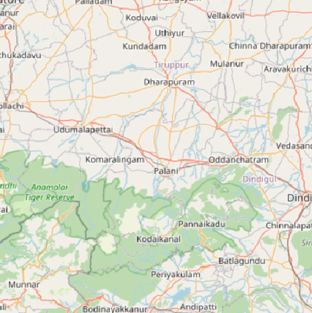
We process the raster stack in R with the terra package, which has the advantage that it only loads into computer memory as needed, and can load lower resolution automatically if that’s appropriate.
Task: Import the raster stack as terra::SpatRaster objects.
# the GeoTIFF file name
sg.fn <- "lat1011_lon7778_stack.tif"
(sg <- rast(paste0(file.dir, sg.fn)))class : SpatRaster
dimensions : 476, 476, 42 (nrow, ncol, nlyr)
resolution : 0.002100326, 0.002100326 (x, y)
extent : 77.00086, 78.00062, 10.00124, 11.00099 (xmin, xmax, ymin, ymax)
coord. ref. : lon/lat WGS 84 (EPSG:4326)
source : lat1011_lon7778_stack.tif
names : bdod_~_mean, bdod_~_mean, bdod_~_mean, bdod_~_mean, bdod_~_mean, bdod_~_mean, ...
min values : 83.34045, 103.1984, 90.17023, 94.4779, 88.24824, 100.3863, ...
max values : 154.86685, 155.7222, 161.71574, 158.0000, 155.93663, 157.8423, ... The properties and depth slices in this raster stack:
# layers of the raster stack
layer.names <- names(sg)
tmp <- strsplit(layer.names, "_")
(property.names <- unique(unlist(lapply(tmp, FUN = function(x) x[1]))))[1] "bdod" "cec" "cfvo" "clay" "phh2o" "silt" "soc" (depth.names <- unique(unlist(lapply(tmp, FUN = function(x) x[2]))))[1] "0-5cm" "100-200cm" "15-30cm" "30-60cm" "5-15cm" "60-100cm" The raster stack has 42 layers, this is six depth slices for each of 7
Task: Plot one layers of all the properties.
to.plot <- grep(depth.names[1], layer.names, fixed = TRUE)
par(mfrow=c(4,2))
tmp <- terra::plot(sg[[to.plot]])
par(mfrow=c(1,1))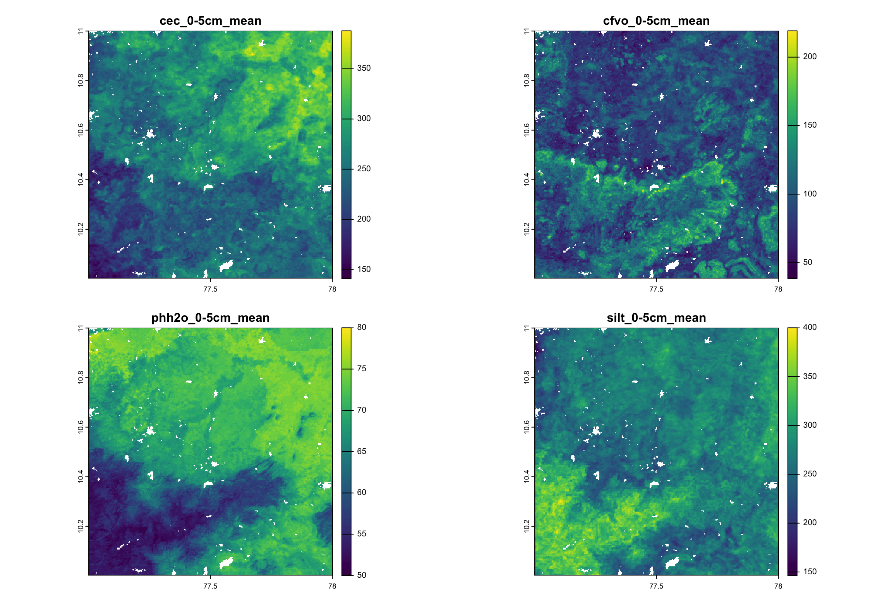
We see a wide range of values and patterns.
Task: Plot all layers of one property.
to.plot <- grep(property.names[3], names(sg), fixed = TRUE)
r.max <- ceiling(max(global(sg[[to.plot]], fun = "max", na.rm = TRUE)))
r.min <- floor(min(global(sg[[to.plot]], fun = "min", na.rm = TRUE)))
par(mfrow=c(2,3))
tmp <- terra::plot(sg[[to.plot]], range = c(r.min, r.max))
par(mfrow=c(1,1))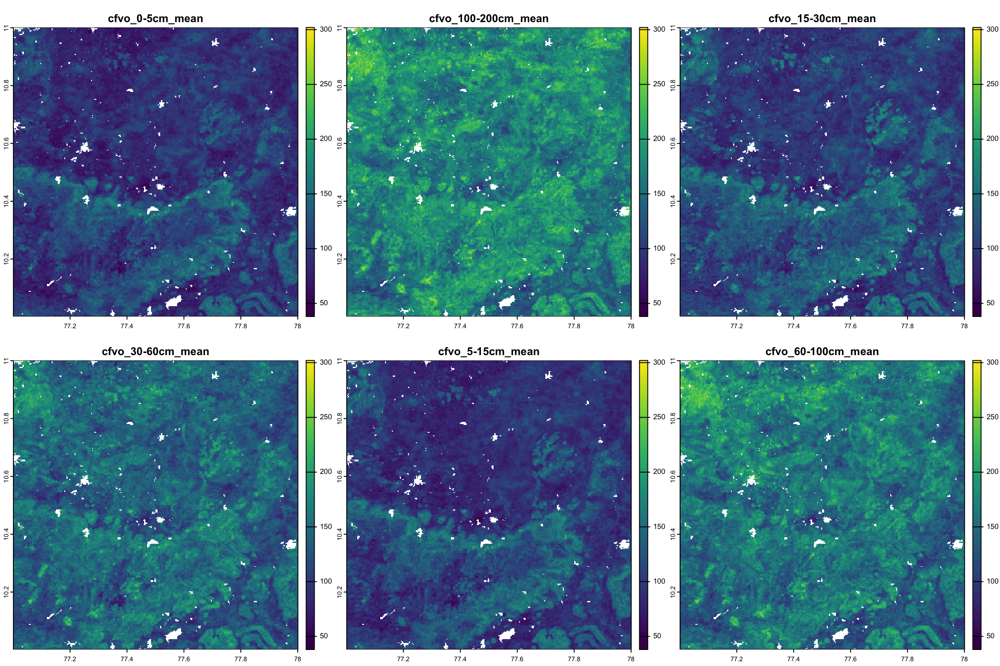
3.4 Crop to a test area
For quicker computation, we restrict the maps (\(1^\circ\) x 1^) to a quarter-map (\(0.25^\circ\) x \(0.25^\circ\)), centred to show some interesting patterns.
Task: Crop the raster stack to a quarter-map.
test.tile.size <- 0.25 # degrees
test.tile.x.offset <- 0.25 # lrc west from right edge
test.tile.y.offset <- 0.25 # lrc north from bottom edge
ext.crop <- round(as.vector(ext(sg)),2) # line up to .00 decimal degrees
ext.crop["xmax"] <- ext.crop["xmax"] - test.tile.x.offset
ext.crop["xmin"] <- ext.crop["xmax"] - test.tile.size
ext.crop["ymin"] <- ext.crop["ymin"] + test.tile.y.offset
ext.crop["ymax"] <- ext.crop["ymin"] + test.tile.size
ext(ext.crop)SpatExtent : 77.5, 77.75, 10.25, 10.5 (xmin, xmax, ymin, ymax)sg4 <- crop(sg, ext(ext.crop))Task: Repeat the plots, but just for the quarter-tile.
Task: Plot one layers of all the properties.
to.plot <- grep(depth.names[1], layer.names, fixed = TRUE)
par(mfrow=c(3,3))
tmp <- terra::plot(sg4[[to.plot]])
par(mfrow=c(1,1))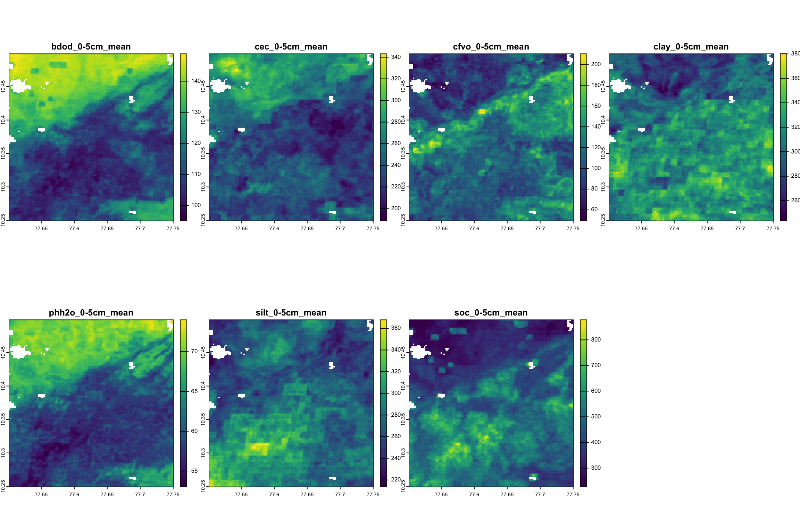{#fig-layer1-properties-1/4 width=1152}
We see a wide range of values and patterns.
Task: Plot all layers of one property.
to.plot <- grep(property.names[3], layer.names, fixed = TRUE)
r.max <- ceiling(max(global(sg4[[to.plot]], fun = "max", na.rm = TRUE)))
r.min <- floor(min(global(sg4[[to.plot]], fun = "min", na.rm = TRUE)))
par(mfrow=c(2,3))
tmp <- terra::plot(sg4[[to.plot]], range = c(r.min, r.max))
par(mfrow=c(1,1))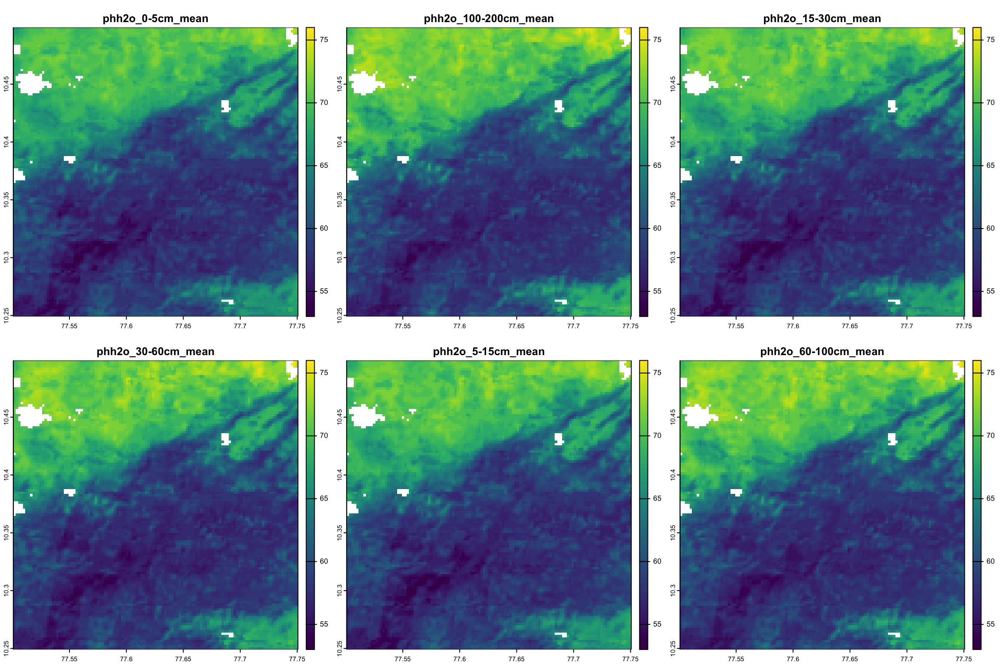
3.5 Transform to a metric CRS
Landscape metrics require approximately equal-area grid cells, so the raster stack, currently in a geographic Coördinate Reference System (CRS), must be projected to a metric system. CRS in R are most easily expressed by their EPSG code.
CRS definitions and EPSG codes can be found at at the EPSG Geodetic Parameter Dataset. A reasonable choice for areas narrower (longitude) than about \(6^\circ\) is the Universal Transmercator (UTM) system, which covers a \(6^\circ\)-wide latitude range with about a \(0.5^\circ\) buffer on each edge. Since our test area is \(1^\circ\)-wide this is a good choice.
Several datums (forms of the Earth, Earth centre origin) can serve as the basis for the UTM CRS. A common choice is the WGS84 datum. This CRS us used by the Global Positioning System (GPS). It is accurate to within 1 m within each \(6^\circ\) UTM slice, of which there are 60.
The EPSG codes for these have the format 326xx, where xx is the UTM zone number.
Determine the UTM zone from the longitude of the central meridian of the raster stack. Use this to determine the corresponding EPSG code:
# a function to find the correct UTM zome
long2UTM <- function(long) { (floor((long + 180)/6) %% 60) + 1 }
# find the zone from the central meridian
utm.zone <- long2UTM(st_bbox(sg)$xmin +
0.5*(st_bbox(sg)$xmax - st_bbox(sg)$xmin))
cat(paste("UTM Zone", utm.zone))UTM Zone 43epsg.utm <- paste0("epsg:326", utm.zone)
cat(paste("CRS code:", epsg.utm))CRS code: epsg:32643Task: Resample the maps to the UTM projection, at nominal 250 m grid cell resolution.
Notes:
- The interpolation method used by
terra::projectis, by default, bilinear. This is appropriate for continuous-valued maps. - Specify the grid cell size with the
resargument toterra::project. SoilGrids maps are nominally at this scale, although presented in geographical coördinates and the Homosoline projection.
st_bbox(sg4) xmin ymin xmax ymax
77.50074 10.24908 77.75068 10.49902 sg4.utm <- terra::project(sg4, epsg.utm,
res = c(250, 250), method = "bilinear")
st_bbox(sg4.utm) xmin ymin xmax ymax
773723 1133915 801223 1161915 4 Characterizing patterns
A first step is to characterize maps by statistical measures. This gives objective information about their spatial patterns.
The methods to characterize patterns are different for maps of continuous variables (Section 5) and classified (categorical) variables (Section 6).
5 Characterizing patterns – Continuous
These are methods that require continuous values on at least an interval scale, and usually a ratio scale (with a true zero). Some properties, e.g., pH, do not have a true zero, so they are an interval scale. Other properties such as coarse fragment volume have a true zero, and one can speak of one location being “twice as stony” than another, for example.
5.1 The global variogram
The variogram (or a correlogram) can be used to characterize the degree of spatial continuity and the “roughness” of a continuous property map, averaged across the entire map. Note that this depends on the grid cell size in two ways:
- Any pattern at finer resolutions has been removed;
- The values in grid cells may be produced by punctual or block methods. Block methods smooth values, so that the variogram sill will necessarily be lower than for punctual predictions. Also, the range may be longer.
In this section we compute short-range variograms. These reveal local structure. In DSM maps the variogram is typically unbounded, but we don’t care about the long-range structure when we are evaluating patterns. The parameters of the local structure characterize the fine-scale variability.
Note: Variograms are typically produced separately for each mapped soil property. To characterize an inherent landscape scale, a number of properties can be combined by principal component analysis (PCA) and the first component (PC1) can be characterized.
Task: Convert the terra::SpatRaster raster stack to an sp::SpatialPointsDataFrame.
and then to an sf:sf stack in order to compute variograms. The gstat::variogram method must be applied to an object of class sp or sf, not directly to a terra::SpatRaster.
Note: There is (so far) no direct conversion from terra::SpatRaster objects to sf:sf objects.
dim(sg4.utm)[1] 112 110 42# keep the coordinates in the data frame
sg4.sp <- as.data.frame(sg4.utm, xy = TRUE)
# convert to SpatialPointsDataFrame by indentifying the fields that are coordinates
coordinates(sg4.sp) <- ~ x + y
class(sg4.sp)[1] "SpatialPointsDataFrame"
attr(,"package")
[1] "sp"dim(sg4.sp)[1] 11948 42Now convert to Simple Features (sf) objects, one per property and depth:
sg4.sf <- lapply(1:dim(sg4.sp)[2], function(i) {
st_as_sf(sg4.sp[,i])
})
class(sg4.sf); length(sg4.sf)[1] "list"[1] 42# examine one `sf` object in the list
head(sg4.sf[[1]])Each item in the list sg4.sf is a Simple Features points object.
Task: Set the initial parameters for empirical variogram as the resolution.
If the bin width is the resolution, we get one-grid-cell spatial correlations.
range.init <- 1000 # estimated range, m
cutoff.init <- range.init*5 # cutoff for empirical variogram, m
width.init <- 250 # bin widthTask: Compute and display the empirical variograms for some properties and layers.
Here is an example with the first layer of the raster stack, accessed by the [[1]] syntax. You can substitute any property and layer, according to your interest. You can also use one of the layer names to specify the raster layer to analyse, e.g. [["cfvo_5-15cm_mean"]].
print(layer.names) [1] "bdod_0-5cm_mean" "bdod_100-200cm_mean" "bdod_15-30cm_mean"
[4] "bdod_30-60cm_mean" "bdod_5-15cm_mean" "bdod_60-100cm_mean"
[7] "cec_0-5cm_mean" "cec_100-200cm_mean" "cec_15-30cm_mean"
[10] "cec_30-60cm_mean" "cec_5-15cm_mean" "cec_60-100cm_mean"
[13] "cfvo_0-5cm_mean" "cfvo_100-200cm_mean" "cfvo_15-30cm_mean"
[16] "cfvo_30-60cm_mean" "cfvo_5-15cm_mean" "cfvo_60-100cm_mean"
[19] "clay_0-5cm_mean" "clay_100-200cm_mean" "clay_15-30cm_mean"
[22] "clay_30-60cm_mean" "clay_5-15cm_mean" "clay_60-100cm_mean"
[25] "phh2o_0-5cm_mean" "phh2o_100-200cm_mean" "phh2o_15-30cm_mean"
[28] "phh2o_30-60cm_mean" "phh2o_5-15cm_mean" "phh2o_60-100cm_mean"
[31] "silt_0-5cm_mean" "silt_100-200cm_mean" "silt_15-30cm_mean"
[34] "silt_30-60cm_mean" "silt_5-15cm_mean" "silt_60-100cm_mean"
[37] "soc_0-5cm_mean" "soc_100-200cm_mean" "soc_15-30cm_mean"
[40] "soc_30-60cm_mean" "soc_5-15cm_mean" "soc_60-100cm_mean" names(sg4.sf[[1]])[1] "bdod_0-5cm_mean" "geometry" # give the `sf` object a simple name, also the target variable
var <- sg4.sf[[1]]
names(var)[1] <- "z"
v.sg <- variogram(z ~ 1, loc = var,
cutoff=cutoff.init, width=width.init)
#
plot(v.sg, main = layer.names[1])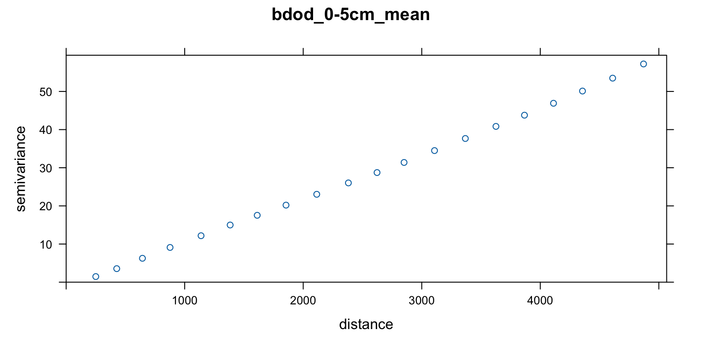
Task: Fit a variogram model to the empirical variogram.
The differences can be quantified by the parameters of a fitted variogram model. We try an exponential model because (1) it has the simplest theory, and (2) we expect to not reach a sill within the short range investigated.
We use the fit.variogram method to adjust an initial estimate by weighted least squares (linear in the number of point-pairs and inverse squared in the separation disatance, i.e., the default gstat method 7). The estimated sill is the maximum \(\gamma\) in the empirical variogram.
vm.sg <- vgm(0.8*max(v.sg$gamma), "Exp", range.init, 0)
print(vmf.sg <- fit.variogram(v.sg, model=vm.sg)) model psill range
1 Nug 0.00 0.0
2 Exp 5528.71 483595.9plot(v.sg, model=vmf.sg, main = layer.names[1],
xlab = "separation m", ylab = expression(paste(Delta, plain(pH)^2)))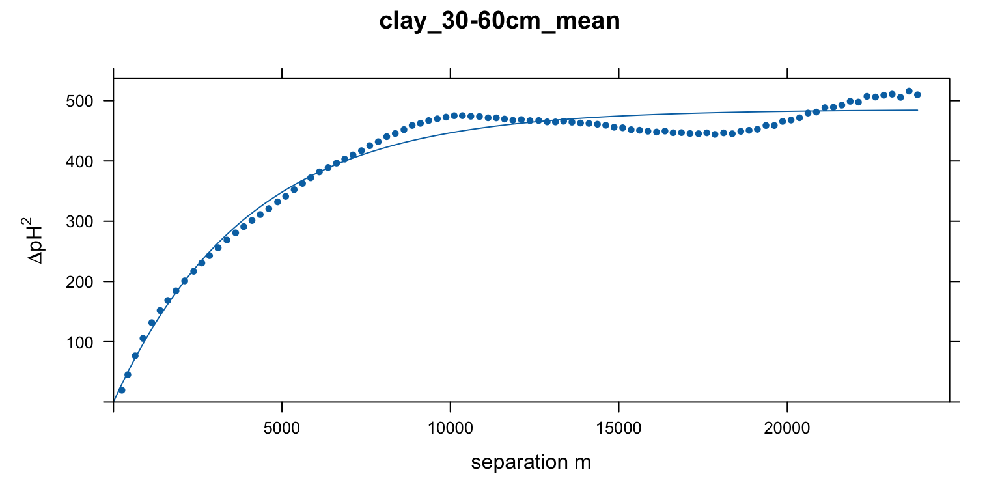
Q: How well does the fitted model match the empirical variogram? If the fit has some problems, what could be a solution?
5.2 Moving-window local association
The local spatial structure may not be consistent across the mapped area – that is, the assumption of second-order stationarity may be (and often is) false. This means that the average variogram, computed over that area, is misleading.
The gridded maps have so many cells that it’s possible to compute moving-window variograms, as in the VESPER program (Minasny et al., 2005) developed for precision agriculture applications. This will show if the local spatial association is consistent across the map. This also allows maps to be compared window-by-window. I have not (yet?) implemented this in R, so we must use another method to assess moving-window local spatial association.
A quick way to see the local degree of autocorrelation is with Moran’s I applied to a window of appropriate size around each grid cell, using the terra::autocor function.
Moran’s I is defined as:
\[ I = \frac{n}{\sum_i \sum_j w_{ij}} \frac{\sum_i \sum_j w_{ij}(y_i - \bar{y})(y_j - \bar{y})}{\sum_i (y_i - \bar{y})^2}\]
where \(y_i\) is the value of the variable in the \(i\)th of \(n\) neighbouring grid cells, \(\bar{y}\) is the global mean of the variable, \(w_{ij}\) is the spatial weight of the link between the target cell \(i\) and its neighbour cell \(j\). The expected value of Moran’s I is \(-1/(n-1)\) if the pattern of the response variable is random, i.e., no spatial correlation. So for a \(5 \times 5\) neighbourhood the expected value is \(-1/24 = -0.041\bar{6} \approx 0\).
The second term numerator is the weighted covariance. Its denominator normalizes by the variance. The first term normalizes by the sum of all weights, so that the test is comparable among tests with different numbers of neighbours and using different weightings.
Task: Construct a weights matrix for local Moran’s I, for a \(5 \times 5\) grid cell neighbourhood, i.e., up to \(\pm \; 500 \; m\) in the N/S directions and \(\pm \; 500\times\sqrt{2} \approx 707 \; m\) along the diagonals.
We determine the weights matrix for Moran’s I from the fitted global variogram of the previous section and the grid cell size. Weights are the one minus the semivariance at each cell distance, so that the centre pixel receives the maximum weight.
Here is a function to make an odd-sized square window (default 5 x 5) with weights taken from the variogram model, scaled to the resolution.
make.weights <- function(n = 5, res = 250, vgm) {
m <- matrix(0, nrow = n, ncol = n)
center <- ceiling(n / 2)
for (i in 1:n) {
for (j in 1:n) {
# distance in cell units, multipled by the grid resolution
m[i, j] <- sqrt((i - center)^2 + (j - center)^2)*250
}
}
w <- 1 - variogramLine(vm.sg, dist_vector = m)
return(w)
}Figure 5 shows the Euclidean distance weights in a 5 x 5 window.
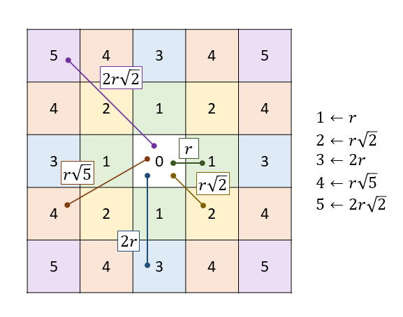
Here is a function to use this to compute and display the moving-window autocorrelation for any odd window size. This uses the terra::autocor method, applied to a weighted window.
show.autocor <- function(n = 5) {
sg.utm.autocor <- terra::autocor(sg4.utm[[1]],
w=make.weights(n, res(sg4.utm)[1], vmf.sg),
method="moran", global = FALSE)
terra::plot(sg.utm.autocor, main = paste("SG250, Moran's I", n, "x", n),
col = rev(hcl.colors(32, palette = "RdYlGn")))
}Task: Compute and display the moving-window autocorrelation, for a 5 x 5 window, in this case 1250 x 1250 m; a 7 x 7 window (1500 x 1500); and a 9 x 9 window (1750 x 1750).
show.autocor(5)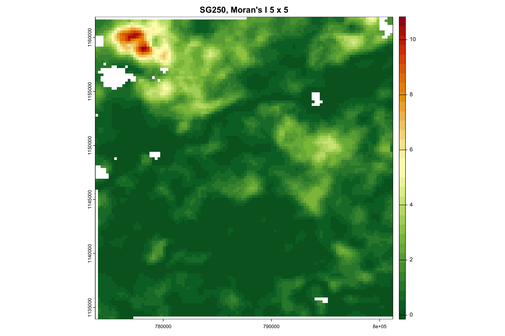
show.autocor(7)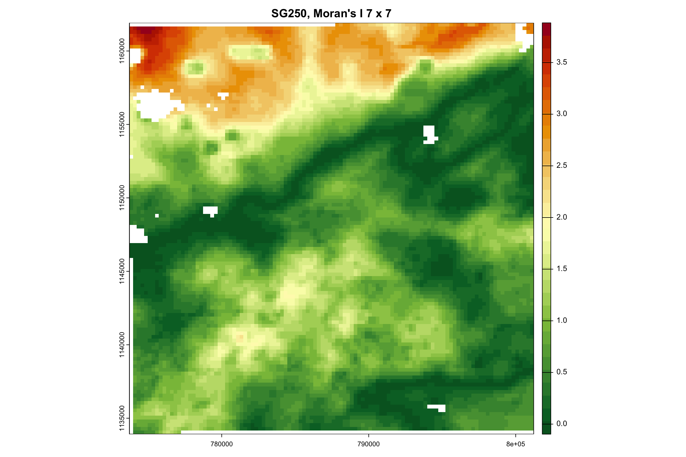
show.autocor(9)These are all very far from the random value \(-0.041\bar{6}\). Both maps show hot spots with much larger local autocorrelation than the map average. Some areas have almost none or even more dispersed than random (negative values).
To appreciate the local Moran’s I values, here is the global Moran’s I with the same weights matrix. These are the averages of all the local (window) Moran’s I.
global.moran <- function(n) {
print(paste("SG:", round(terra::autocor(sg4.utm[[1]],
w=make.weights(n, res(sg4.utm)[1], vmf.sg),
method="moran", global = TRUE), 3)))
}
global.moran(5)[1] "SG: 0.969"global.moran(7)[1] "SG: 0.954"global.moran(9)[1] "SG: 0.939"Q: Is the pattern of local autocorrelation the same across the map?
Q: How does this change as the window size increases?
5.3 Grey Level Co-occurrence Matrix (GLCM)
The idea of characterizing the “texture” of an image has a long history in image processing Haralick et al. (1973). One method for this is the Grey Level Co-occurrence Matrix. Here the “grey levels” (GL) refer to pixel values – in our context, the values of the soil property, typically quantized (sliced) to some precision. The “co-occurrence” (C) refers to the statistical properties within some window, either isotropic or weighted in some direction. The GLCM shows how often different combinations of values (“grey levels”) occur over local windows within the map. These local textures can be related to landscape ecology, in our case the local spatial structure of the values of a soil property. Many statistics can then be computed to characterize this matrix.
GLCM statistics, in the context of DSM, show the local statistical properties of a window as it moves across the map. These can be interpreted as, for example, homogeneity or contrast within a window, thereby revealing areas of the map with different spatial structure.
See Hall-Beyer (2017a) for a tutorial introduction to the construction, use, and interpretation of GLCM-based textures, and Hall-Beyer (2017b) for guidelines on choosing appropriate GLCM-based textures in the context of land cover classification.
5.3.1 Quantization
The GLCM is constructed from a moving-window analysis of the map, with the (odd-sized) window considered as a matrix of grid cells.
Before analysis the original map is quantized into a fixed number of levels, by analogy with remote sensing image processing, typically from 16 to 64 levels. Quantization is computed by slicing the value range into equal intervals and replacing the original values with the integer level number.
The GLCM approximates the joint probability distribution of the levels of two pixels separated by the specified shift(s), that is, how likely it is that these two levels occur together in the window. We would like to avoid zero probabilities. If there are too many levels, many pairs of will not occur. So we should pick a number of levels for quantization which avoids this.
The following code shows how to quantize the SoilGrids map into 16 levels. This will be done automatically by the glcm function, see below, here we show how this process works. In the actual computation of statistics we will use more levels.
range(values(sg4.utm[[1]], na.rm = TRUE))[1] 95.51815 148.71246sg4.quant <- cut(values(sg4.utm[[1]]), breaks = 16, labels = 0:15, include.lowest = TRUE)
table(sg4.quant)sg4.quant
0 1 2 3 4 5 6 7 8 9 10 11 12 13 14 15
75 707 1645 1739 1336 772 600 469 397 459 693 519 588 713 1068 168 # show the breakpoints
levels(cut(values(sg4.utm[[1]]), breaks = 16, include.lowest = TRUE)) [1] "[95.5,98.8]" "(98.8,102]" "(102,105]" "(105,109]" "(109,112]"
[6] "(112,115]" "(115,119]" "(119,122]" "(122,125]" "(125,129]"
[11] "(129,132]" "(132,135]" "(135,139]" "(139,142]" "(142,145]"
[16] "(145,149]" sg4.utm.quant <- sg4.utm[[1]]
values(sg4.utm.quant) <- sg4.quant
plot(sg4.utm.quant, col = rainbow(16), main = paste(layer.names[1], ", 16 levels"))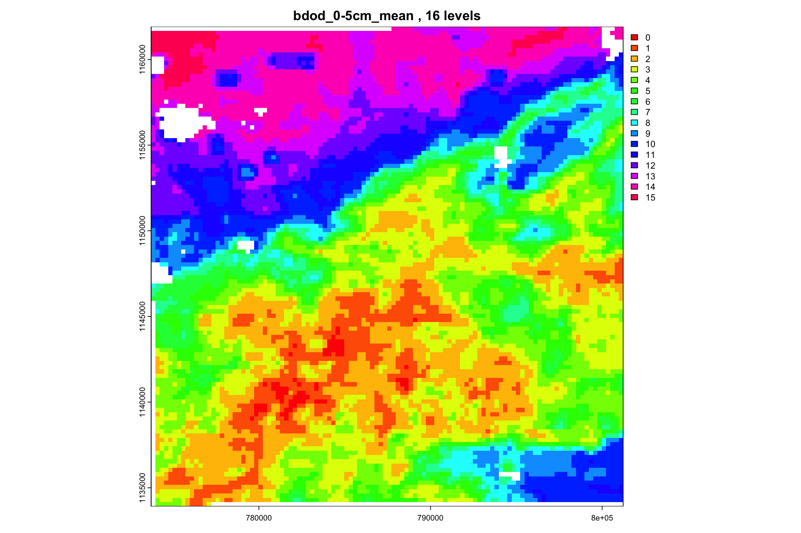
It is difficult to see just from this map if the GLCM will have too many zeroes, or if a finer quantization could be supported.
5.3.2 Constructing a GLCM
This section shows how a GLCM is constructed. We take a simple example of an 8-class quantization and a 5x5 window near the middle of the map, and a one-cell rightward shift.
The make_glcm method is provided by a different GLCM package: GLCMTextures.
# obtain the bounding box of the test area from cell numbers
xy <- xyFromCell(sg4.utm[[1]], cellFromRowCol(sg4.utm[[1]], 40:45, 40:45))
# crop to this box
w.sg <- crop(sg4.utm[[1]], xy)
test.quant <- cut(values(w.sg), breaks = 8,
labels = 0:7, include.lowest = TRUE)
# the classes of the cut
(l.8 <- levels(cut(values(w.sg), breaks = 8, include.lowest = TRUE)))[1] "[118,120]" "(120,122]" "(122,124]" "(124,126]" "(126,128]" "(128,129]"
[7] "(129,131]" "(131,133]"# add the class labels to the test map
w.sg.8 <- w.sg; values(w.sg.8) <- test.quant
# show the property and the derived grey levels together
par(mfrow = c(1,2))
plot(w.sg, main = "property value")
plot(w.sg.8, main = "grey level", col = grey.colors(8))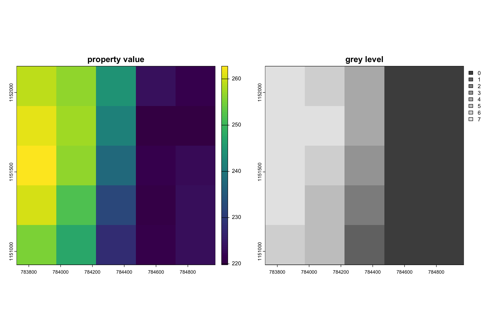
par(mfrow = c(1,1))
# set up the matrix on which to compute the GLCM
(test.matrix <- as.matrix(w.sg.8, wide = TRUE)) [,1] [,2] [,3] [,4] [,5]
[1,] 8 8 8 8 7
[2,] 8 8 8 8 6
[3,] 8 8 8 7 5
[4,] 8 8 6 5 3
[5,] 7 6 4 2 1glcm <- GLCMTextures::make_glcm(test.matrix,
n_levels = 9, shift = c(1, 0), # shift one cell to the right
normalize = FALSE )
print(glcm) [,1] [,2] [,3] [,4] [,5] [,6] [,7] [,8] [,9]
[1,] 0 0 0 0 0 0 0 0 0
[2,] 0 0 1 0 0 0 0 0 0
[3,] 0 1 0 0 1 0 0 0 0
[4,] 0 0 0 0 0 1 0 0 0
[5,] 0 0 1 0 0 0 1 0 0
[6,] 0 0 0 1 0 0 1 1 0
[7,] 0 0 0 0 1 1 0 1 2
[8,] 0 0 0 0 0 1 1 0 2
[9,] 0 0 0 0 0 0 2 2 18sum(diag(glcm))/sum(glcm)[1] 0.45The original matrix is 5 x 5 cells; the GLCM is 9 x 9 levels.
In this example 0.45 of the adjacenies are on the GLCM diagonal, i.e., with no change in level based on the 8-level GLCM. The off-diagonals show how many shifts in class, the large the more abrupt the difference.
5.3.3 Computation of GLCM texture measures
From the quantized matrix, the GLCM can be constructed for one or more specified offsets, called a shift. These can be either along the row, column, or diagonal, as specified by the analyst. Each element at position \((i,j)\) in the GLCM counts how many times a pixel with value \(i\) and a value \(j\) occur together with the specified offset. So for example a map quantized with 32 levels will have a 32 x 32 GLCM.
If multiple shifts are specified, the texture statistics are computed for all the specified shifts, with the result for a pixel being the mean of these statistics for each pixel.
The GLCM describes the spatial relationships of (quantized) values in the map; this can be considered “texture”. Many statistics can be computed on the GLCM. Among the relevant statistics for pattern analysis are the mean, variance, homogeneity, contrast, entropy, dissimilarity, second moment, and correlation of the GLCM.
The R glcm package computes these metrics. It requires an object in the older raster package format.
# convert to the older `raster` format
sg4.utm.raster <- raster(sg4.utm)We choose to compute the mean statistics for four shifts: one pixel by row, column, and both diagonals. If there is orientation (anisotropy) evident in the map, just one shift could be used to characterize the shifts in that orientation.
We choose to compute on a 5 x 5 window (both dimensions must be odd). Since the resolution is already coarse (250 m) this will characterize the texture in \(1.5625 ~ \mathrm{km}^2\) squares
stat.list <- c("mean","variance","homogeneity","contrast",
"entropy","dissimilarity","second_moment",
"correlation")
glcm.sg <- rast(glcm(sg4.utm.raster,
window = c(5, 5),
n_grey = 32, # number of levels in the GLCM
shift=list(c(0,1), c(1,1), c(1,0), c(1,-1)), # all directions
na_opt = "ignore",
statistics = stat.list))
class(glcm.sg)[1] "SpatRaster"
attr(,"package")
[1] "terra"summary(glcm.sg) glcm_mean glcm_variance glcm_homogeneity glcm_contrast
Min. :0.0000 Min. : 0.00 Min. :0.0000 Min. : 0.000
1st Qu.:0.2219 1st Qu.: 49.14 1st Qu.:0.5431 1st Qu.: 0.760
Median :0.3468 Median :123.28 Median :0.6372 Median : 1.370
Mean :0.4461 Mean :266.69 Mean :0.6297 Mean : 6.156
3rd Qu.:0.6918 3rd Qu.:474.09 3rd Qu.:0.7240 3rd Qu.: 2.620
Max. :0.9891 Max. :947.12 Max. :1.0000 Max. :257.050
NA's :1192 NA's :1192 NA's :1192 NA's :1192
glcm_entropy glcm_dissimilarity glcm_second_moment glcm_correlation
Min. :0.000 Min. :0.000 Min. :0.0000 Min. : -Inf
1st Qu.:1.879 1st Qu.:0.600 1st Qu.:0.0856 1st Qu.:0.4877
Median :2.263 Median :0.840 Median :0.1232 Median :0.6575
Mean :2.191 Mean :1.049 Mean :0.1521 Mean : -Inf
3rd Qu.:2.572 3rd Qu.:1.190 3rd Qu.:0.1848 3rd Qu.:0.8043
Max. :3.150 Max. :9.530 Max. :1.0000 Max. :6.7768
NA's :1192 NA's :1192 NA's :1192 NA's :1243 plot(glcm.sg)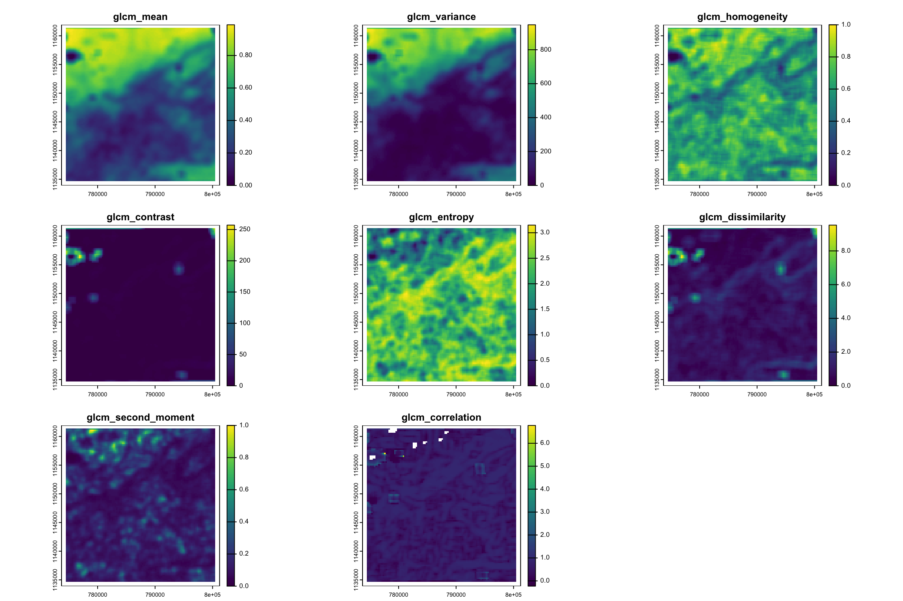
5.3.4 Interpretation
Each of the texture metrics quantifies some aspect of the texture. For a thorough explanation see Hall-Beyer (2017a) and Hall-Beyer (2017b). Here we examine a few of them.
Mean and Variance represent the overall inhomogeneity of the window. The mean is the mean change in the selected shift(s) and the variance is how variable are the changes.
\[\mu = \sum_{i,j = 0}^{N-1} i \cdot P_{i,j}\]
plot(glcm.sg[["glcm_mean"]], main = "GLCM mean",
col=(sp::bpy.colors(32)))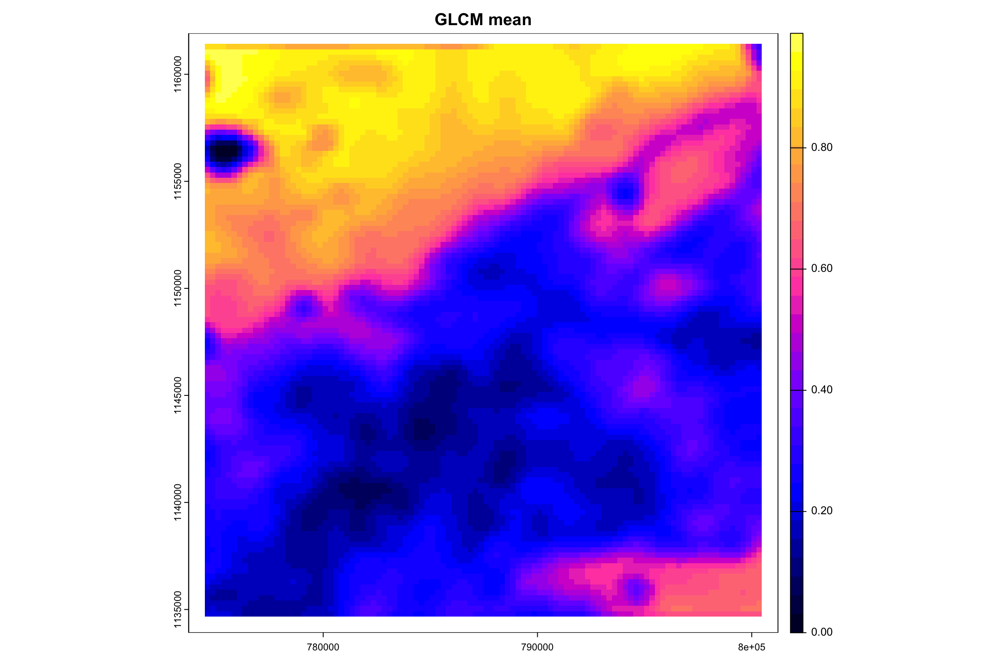
Areas with the higher values have more and/or larger differences between neighbours.
\[\sigma^2 = \sum_{i,j = 0}^{N-1} P_{i,j}\cdot (i - \mu)^2\]
plot(glcm.sg[["glcm_variance"]], main = "GLCM variance",
col=(cm.colors(32)))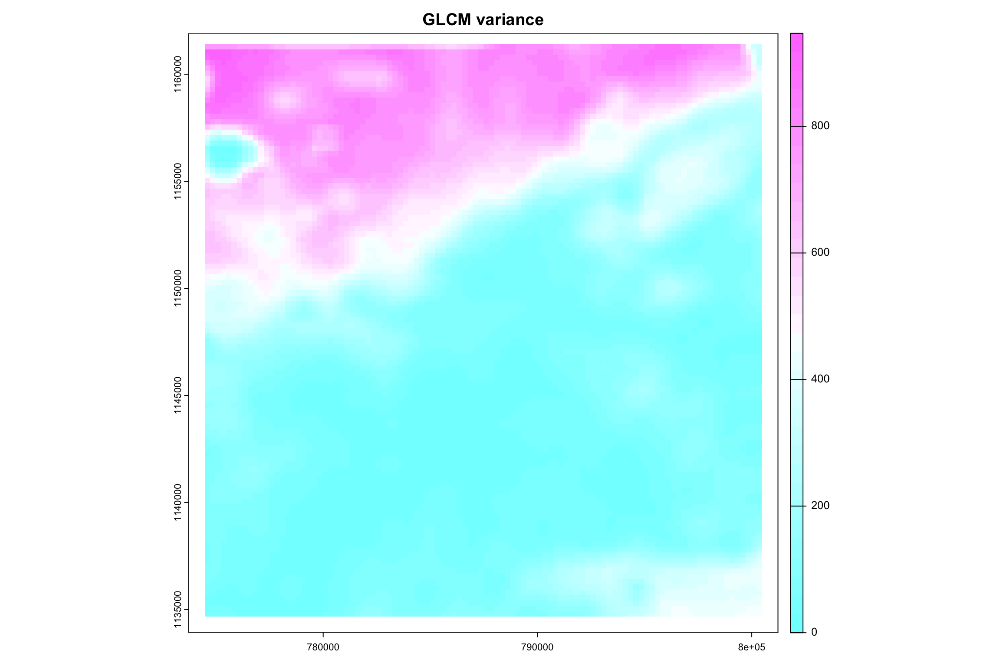
Contrast is the amount of local variation in a window, with emphasis (squared distance) on the off-diagonals of the GLCM, i.e., larger changes in the quanta level.
\[\sum_{i,j = 0}^{N-1} P_{i,j}\cdot (i - j)^2\]
where \(P_{i,j}\) is the proportion of the class \(i\) and \(j\) co-occurrence in the window.
plot(glcm.sg[["glcm_contrast"]], main = "Contrast",
col=(topo.colors(32)))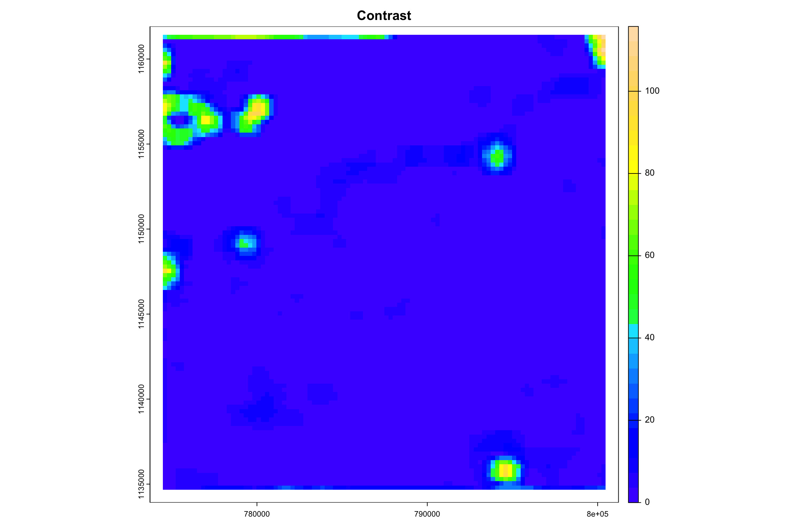
There are “hot spots” of high contrast, i.e., areas in the map with a relatively wide range of propertu values. Note that this shows that the assumption of second-order stationarity used in the variogram analysis Section 5.1 is definitely not correct.
A variant is the dissimilarity, where the weights are linear away from the diagonal, rather than quadratic:
\[\sum_{i,j = 0}^{N-1} P_{i,j}\cdot |i - j|\]
plot(glcm.sg[["glcm_dissimilarity"]], main = "Dissimilarity",
col=(topo.colors(32)))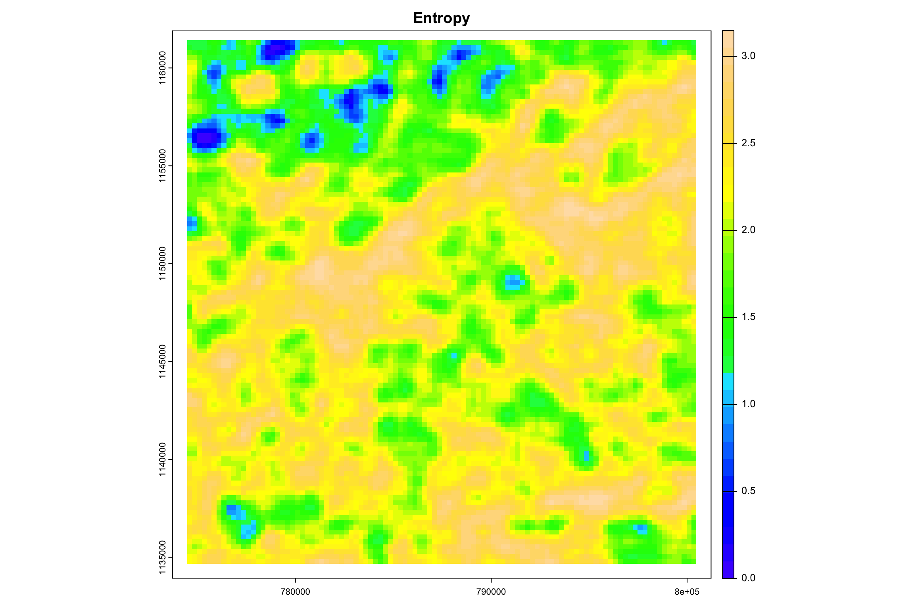
Entropy is a measure of information within a window. It accounts for the number of different levels in the window (the others will have “probability” zero) and their relative frequencies. More classes and more even distribution of classes results in increased entropy. This can be thought of as “lack of information”.
\[\sum_{i,j = 0}^{N-1} P_{i,j}\cdot -\ln(P_{i,j})\]
plot(glcm.sg[["glcm_entropy"]], main = "Entropy",
col=(topo.colors(32)))
Challenge: compute the GLCM statistics for different window sizes.
6 Characterizing patterns – Classified
The spatial unit of conventional (legacy) maps is the polygon, not the grid cell. These maps show a discrete number of legend entries (classes), each with one to many polygons. In the soil survey context these are called mapping units, and generally are soil classes, possibly with some landscape features (e.g., erosion class, slope class) as part of the definition. Some mapping units may represent water bodies and various other kinds of non-soil.
Here we continue with the continuous property maps of a single property. To use these techniques on continuous property maps, the maps must be sliced (discretized) into classes. There are several choices:
- meaningful limits, matching some thresholds known to be important for a soil function;
- equal intervals;
- histogram equalization.
For equal intervals or histogram equalization, the cutpoints should be the same for all maps, and therefore derived from their combined distribution of values. We illustrate the process here, but do not use it for the landscape metrics examples later on in the tutorial.
6.1 Classifying by histogram equalization
This section shows how to classify by histogram equalization; the results will not be used later in the tutorial. Instead, we will use meaningful limits (see Section 6.2) to slice the map.
Task: Slice the map by histogram equalization
First, compute the histogram equalization and display the limits on a histogram plot:
n.class <- 8
# combined values
values.sort <- sort(values(sg4.utm[[1]]))
range(values.sort)[1] 95.51815 148.71246# number of pixels not NA
n.nna <- length(values.sort) - sum(is.na(values.sort))
# how many pixels in each bin
(cut.positions <- round(n.nna/n.class))[1] 1494# the cut positions
(cuts <- values.sort[cut.positions * 1:(n.class-1)])[1] 103.6808 106.5202 109.4846 113.9927 123.1471 132.4583 141.3245# integer values for the cuts
cuts[1] <- floor(cuts[1]); cuts[n.class-1] <- ceiling(cuts[n.class-1])
cuts[2:n.class-2] <- round(cuts[2:n.class-2])
print(cuts)[1] 103 107 109 114 123 132 142hist(values.sort, breaks=36, main="Histogram equalization",
xlab = layer.names[1])
abline(v=cuts, col="blue", lwd=2)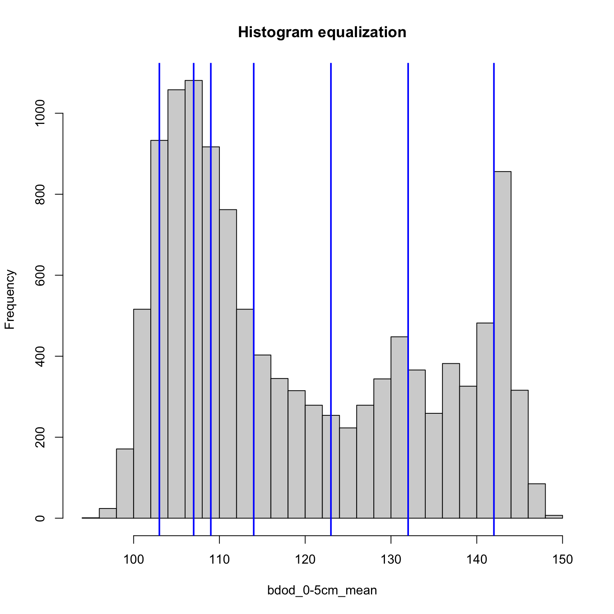
In this plot each slice has the same number of pixels.
Task: slice the map with histogram equalizatioj and display the result.
Slice the map:
# `rcl` is a vector with the lowest limit 0, the cuts, and the maximum valie
# so that all values are classified
sg4.class <- terra::classify(sg4.utm[[1]],
rcl= c(0, cuts, ceiling(max(values.sort))))
table(values(sg4.class))
0 1 2 3 4 5 6 7
1156 2095 1014 1714 1470 1420 1815 1264 names(sg4.class) <- "class"Display the classified map:
terra::plot(sg4.class,
type="classes",
main=layer.names[1])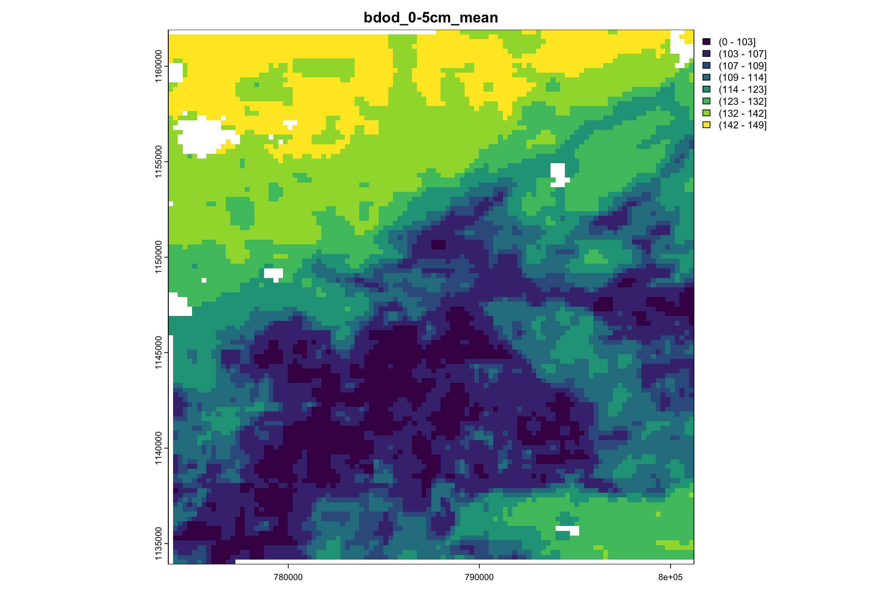
Q: Describe the patterns of the map.
Q: How would these change with different class numbers or limits?
6.2 Classifying by meaningful limits
For soil properties we usually have limits that correspond to approximate thresholds in land use. For example, in the case of pH, we can refer to extension or crop consultant publications, or environmental models. Unlike in histogram equalization, the number of classes depends on the user requirements.
For example, the Cornell pH test kit has a “Wide Range Kit” measuring the soil pH over the range of 4.0–8.6, in increments of 0.2 for an experienced user. Here we will be somewhat less precise, and slice the map in increments of 0.4 pH.
Task: slice the map of surface soil pH and display with a common colour ramp.
Find the combined range and divide into classes of 0.4 pH, starting and ending on even units of 0.4.
Set up the cut points.
# find the layer number for this property
(ix.ph05 <- which(layer.names == "phh2o_0-5cm_mean"))[1] 25(cuts <- seq(floor(min(values(sg4.utm[[ix.ph05]], na.rm = TRUE))),
ceiling(max(values(sg4.utm[[ix.ph05]], na.rm = TRUE))),
by = 0.4)) [1] 53.0 53.4 53.8 54.2 54.6 55.0 55.4 55.8 56.2 56.6 57.0 57.4 57.8 58.2 58.6
[16] 59.0 59.4 59.8 60.2 60.6 61.0 61.4 61.8 62.2 62.6 63.0 63.4 63.8 64.2 64.6
[31] 65.0 65.4 65.8 66.2 66.6 67.0 67.4 67.8 68.2 68.6 69.0 69.4 69.8 70.2 70.6
[46] 71.0 71.4 71.8 72.2 72.6 73.0 73.4 73.8Slice the map of surface soil pH:
sg.ph.class <- terra::classify(sg4.utm[[ix.ph05]], rcl= cuts)
table(values(sg.ph.class))
0 1 2 3 4 5 6 7 8 9 10 11 12 13 14 15 16 17 18 19
11 14 58 87 95 100 146 260 294 420 685 723 810 615 565 448 360 344 264 233
20 21 22 23 24 25 26 27 28 29 30 31 32 33 34 35 36 37 38 39
175 151 145 132 123 130 124 123 127 144 155 163 211 148 219 238 201 294 216 216
40 41 42 43 44 45 46 47 48 49 50 51
304 254 502 281 335 111 99 54 14 18 7 1 names(sg.ph.class) <- "class"Display it:
terra::plot(sg.ph.class,
col=sp::bpy.colors(length(cuts)), type="classes",
main="SG2 pH 0.2 units")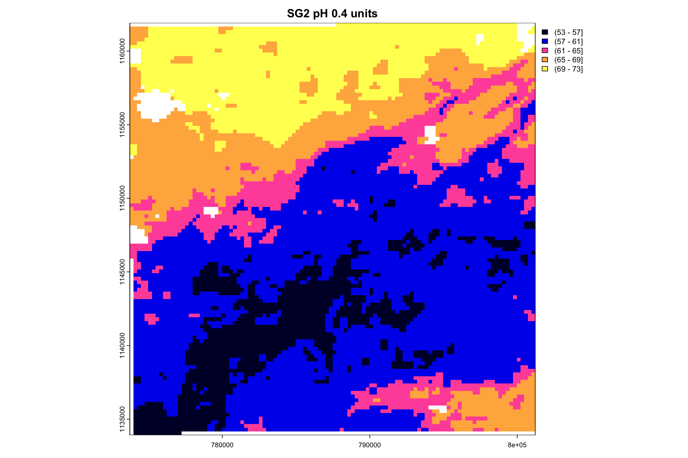
Q: Describe the pattern of the map.
Q: How would the maps change with wider or narrower class intervals? You are welcome to experiment!
6.3 Co-occurrence matrices
One question for a classified map is which classes tend to be adjacent to each other. In the case of the pH map, we might expect adjacent classes to be in the pH sequence, but maybe not – there may be abrupt transitions of parent materials, for example.
A co-occurrence matrix counts all the pairs of adjacent cells for each category in a local landscape, as a cross-classification matrix.
Task: Compute the co-occurrence matrices, using Queen’s Case neighbours (i.e., diagonal links are considered).
Co-occurrence vectors are computed with the lsp_signature function of the motif package, specifyin coma = co-occurrence matrix as the signature.
coma.ph <- lsp_signature(sg.ph.class, type="coma", neighbourhood = 8)
head(coma.ph.matrix <- as.matrix(coma.ph$signature)[[1]]) 1 2 3 4 5 6 7 8 9 10 11 12 13 14 15 16 17 18 19 20 21 22 23 24
1 28 23 24 8 2 1 1 1 0 0 0 0 0 0 0 0 0 0 0 0 0 0 0 0
2 23 16 31 27 12 2 0 1 0 0 0 0 0 0 0 0 0 0 0 0 0 0 0 0
3 24 31 144 136 65 15 23 7 6 6 1 0 0 0 0 0 0 0 0 0 0 0 0 0
4 8 27 136 168 153 79 61 37 11 4 4 2 0 0 0 0 0 0 0 0 0 0 0 0
5 2 12 65 153 142 135 117 61 35 20 5 3 1 0 0 0 0 0 0 0 0 0 0 0
6 1 2 15 79 135 142 161 132 58 31 17 5 4 0 2 0 0 0 0 0 0 0 0 0
25 26 27 28 29 30 31 32 33 34 35 36 37 38 39 40 41 42 43 44 45 46 47 48 49 50
1 0 0 0 0 0 0 0 0 0 0 0 0 0 0 0 0 0 0 0 0 0 0 0 0 0 0
2 0 0 0 0 0 0 0 0 0 0 0 0 0 0 0 0 0 0 0 0 0 0 0 0 0 0
3 0 0 0 0 0 0 0 0 0 0 0 0 0 0 0 0 0 0 0 0 0 0 0 0 0 0
4 0 0 0 0 0 0 0 0 0 0 0 0 0 0 0 0 0 0 0 0 0 0 0 0 0 0
5 0 0 0 0 0 0 0 0 0 0 0 0 0 0 0 0 0 0 0 0 0 0 0 0 0 0
6 0 0 0 0 0 0 0 0 0 0 0 0 0 0 0 0 0 0 0 0 0 0 0 0 0 0
51 52
1 0 0
2 0 0
3 0 0
4 0 0
5 0 0
6 0 0# proportion with adjacent of the same class
sum(diag(coma.ph.matrix))/sum(coma.ph.matrix)[1] 0.2531368The proportion of neighbour pixels with the same class as the corresponding centre pixel is 0.25.
Q: Describe the co-occurrence structure. What does this imply for the spatial pattern?
6.4 Co-occurrence vectors
The Co-occurrence vector “COVE” proposed by Nowosad & Stepinski (2018) summarizes the entire adjacency structure of a map and can be used to compare map structures. This is a normalized form of the co-occurrence matrix (see the previous section). Normalization means the matrix sums to 1, and so is independent of the number of grid cells in the map. Therefore this vector can be considered as a probability vector for the co-occurrence of different classes.
Task: Compute the co-occurrence vectors, using Queen’s Case neighbours.
Co-occurrence vectors are computed with the lsp_signature function of the motif package, specifying cove (normalized co-occurrence vector) as the signature.
# normalized co-occurence vector 8 x 8
print(cove.ph <- lsp_signature(sg.ph.class, type="cove", neighbourhood = 8))# A tibble: 1 × 3
id na_prop signature
* <int> <dbl> <list>
1 1 0.0303 <dbl [1 × 1,378]>6.5 Integrated co-occurrence vector
An integrated co-occurrence vector considers several input layers, for example representing different soil properties of the same area.
To examine this we need another soil property map. Let’s use silt of the 0–5~cm layer. We process this as we did for the pH map. Here the “meaningful limits” for silt content are 5% intervals. Since the SG2 map is expressed in \(\mathrm{g} \; \mathrm{kg}^{-1}\), these are intervals of 50 \(\mathrm{g} \; \mathrm{kg}^{-1}\).
(ix.silt05 <- which(layer.names == "silt_0-5cm_mean"))[1] 31summary(sg4.utm[[ix.silt05]]) silt_0.5cm_mean
Min. :213.7
1st Qu.:261.6
Median :276.7
Mean :278.9
3rd Qu.:295.4
Max. :366.6
NA's :372 (cuts <- seq(floor(min(values(sg4.utm[[ix.silt05]]-50, na.rm = TRUE))),
ceiling(max(values(sg4.utm[[ix.silt05]]+50, na.rm = TRUE))),
by = 50))[1] 163 213 263 313 363 413sg.silt.class <- terra::classify(sg4.utm[[ix.silt05]], rcl= cuts)
table(values(sg.silt.class))
1 2 3 4
3261 7743 939 5 names(sg.silt.class) <- "class"
plot(sg.silt.class, col = topo.colors(11),
main = layer.names[ix.silt05])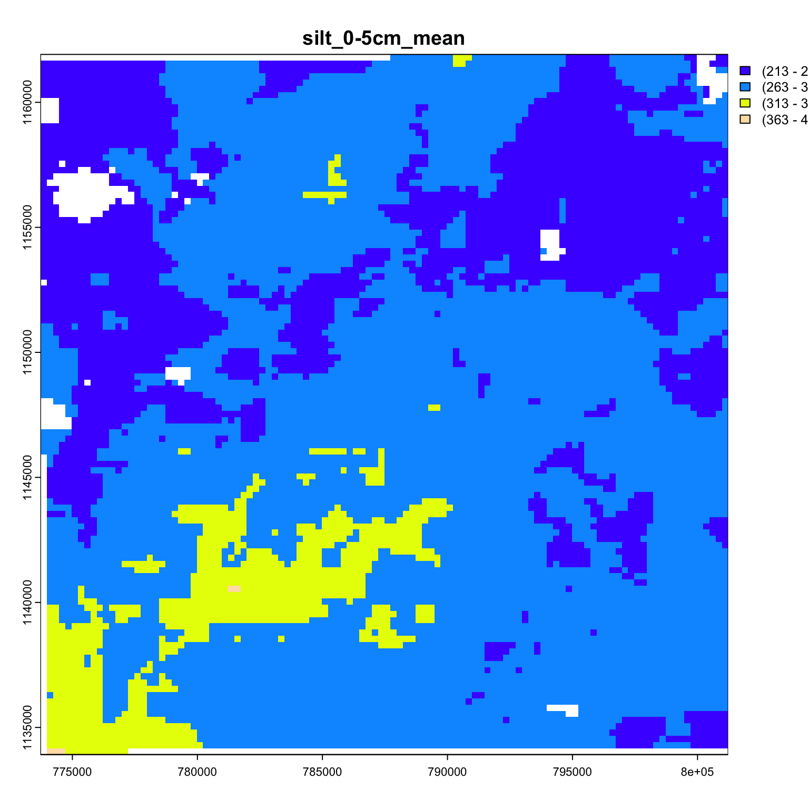
This map has much larger homogeneous areas than the pH map.
Examine this single map’s co-occurrence matrix and vector:
#|.label: coma-cove
coma.silt <- lsp_signature(sg.silt.class, type="coma", neighbourhood = 8)
print(coma.silt.matrix <- as.matrix(coma.silt$signature)[[1]]) 2 3 4 5
2 21978 3406 0 0
3 3406 56252 1451 0
4 0 1451 5896 23
5 0 0 23 6sum(diag(coma.silt.matrix))/sum(coma.silt.matrix)[1] 0.8960508# the co-occurrence vector
(cove.silt <- lsp_signature(sg.silt.class, type="cove", neighbourhood = 8))Most of the adjacencies are to the same class, or the adjacent class.
Task: Compute the distance between the co-occurrence vectors for pH and silt:
cove.df <- data.frame(cove.ph)$signature[[1]][1,]
cove.df <- rbind(cove.df, cove.silt$signature[[1]][1,])
cove.dists <- round(
philentropy::distance(cove.df, method = "jensen-shannon",
use.row.names =TRUE,
as.dist.obj = FALSE,
diag = FALSE) ,4)
print(cove.dists)jensen-shannon
47.2178 6.6 Clustering pattern differences
Once a pattern metric is shown across a map, a natural question is whether different areas of the map have different patterns. We illustrate this with the pattern of the integrated co-occurrence vectors.
Any size window can be used. If too small the result is erratic, if too large, local differences may be missed.
Task: Identify which parts of the SG2 map have similar integrated co-occurrence pattern differences, considering both properties. For this we use 4 x 4 km windows, i.e., 16 x 16 grid cells.
Again we use lsp_signature, type "incove", but now specifying a window size within which to compute the pattern.
sg.ph.silt.class <- c(sg.ph.class, sg.silt.class)
incove.sg <- lsp_signature(sg.ph.silt.class,
type = "incove",
neighbourhood = 8,
ordered = TRUE, # the pH classes are ordered
window = 16,
normalization = "pdf") #sum to one
summary(incove.sg.dist <- lsp_to_dist(incove.sg,
dist_fun = "jensen-shannon")) Min. 1st Qu. Median Mean 3rd Qu. Max.
0.04773 0.37091 0.63975 0.57553 0.75499 0.99690 dim(incove.sg.dist)[1] 49 49Here we have defined 49 x 49 distances, i.e., paired distances between each of the windows’ signatures.
Are any of these distances similar? Let’s see with a cluster analysis.
Task: Make a hierarchical clustering of the distances between the integrated co-occurrence vectors of the windows.
The hclust function can cluster using many methods to build the dendrogram. Here we use Ward’s D2 method, which aims at finding compact, spherical clusters.
sg.hclust <- hclust(incove.sg.dist, method = "ward.D2")
plot(sg.hclust, main = "clusters of distance between `incove`")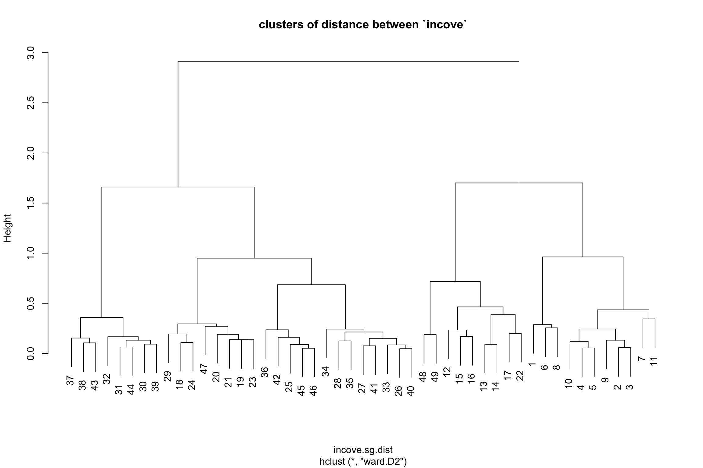
Task: Define classes of similar distances by cutting the dendrogram.
Examining the dendrogram, it seems that height h = 0.5 is a good cutting point, which captures the main differences. Alternatively, a set number of clusters can be requested with the k argument.
sg.clusters <- as.factor(cutree(sg.hclust, h = 0.5)) # cutpoint by visual inspection
levels(sg.clusters)[1] "1" "2" "3" "4" "5" "6" "7" "8"sg.grid.sf = lsp_add_clusters(incove.sg, sg.clusters)
sg.grid.sf$clust <- as.factor(sg.grid.sf$clust)
my.pal <- colorRampPalette(brewer.pal(8, "Accent"))(length(levels(sg.grid.sf$clust)))
ggplot(data = sg.grid.sf) +
geom_sf(aes(fill = clust), alpha = 0.7) +
scale_fill_discrete(type = my.pal) +
labs(title = "Clusters: distance between integrated co-occurrence vectors",
fill = "cluster")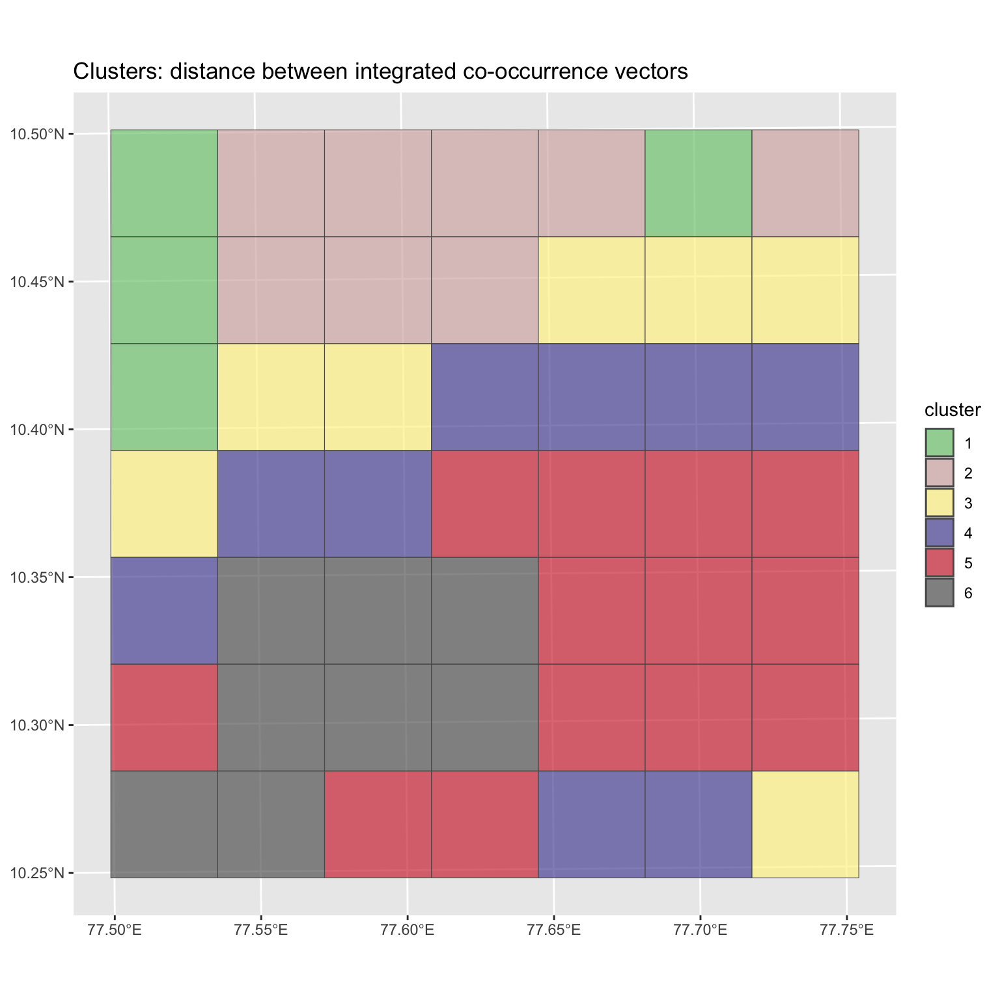
This shows which areas of the map have similar integrated co-occurrence patterns. These can be interpreted as similar soils, in the sense that the sum of propertied defines a soil type.
Compare this to a visual inspection of the patterns, next to the 7 x 6 cluster grid.
p1 <- ggplot(data = sg.grid.sf) +
geom_sf(aes(fill = clust), alpha = 0.7) +
scale_fill_discrete(type = my.pal) +
labs(fill = "cluster", title = "INCOVE clusters") +
theme(legend.position="none")
p2 <- ggplot() +
tidyterra::geom_spatraster(data = sg.ph.class, aes(fill = class)) +
theme(legend.position="none") +
labs(title = "pH 0-5 cm classes")
p3 <- ggplot() +
tidyterra::geom_spatraster(data = sg.silt.class, aes(fill = class)) +
theme(legend.position="none") +
labs(title = "Silt 0-5 cm classes")
gridExtra::grid.arrange(p1, p2, p3, nrow=1)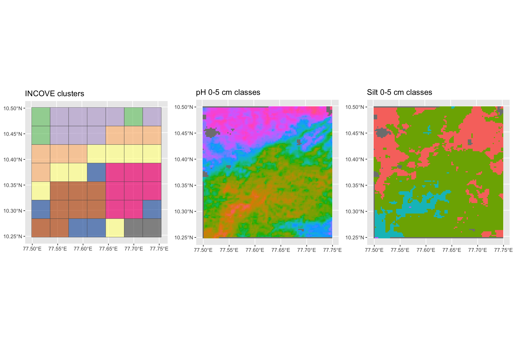
Careful examination reveals that the cluster in the NW corner corresponds to an intricate pattern of pH and mostly one class of silt concentration.
6.7 Landscape metrics
Landscape metrics have a long history of use in landscape ecology (Uuemaa et al., 2013). A wide variety have been collected in the well-known FRAGSTATS computer program (McGarigal et al., 2012). These have been implemented in the R context by the landscapemetrics package1 (Hesselbarth et al., 2019; Hesselbarth, 2021). Although the ecological relevance of FRAGSTATS metrics have been criticized (Kupfer, 2012), here we use them to characterize spatial patterns of soil properties or classes, not as inputs to landscape ecology models.
The patterns of soil classes or properties are not expected to have the same characteristics as those for land cover or vegetation types. Land cover is largely controlled by humans, and where it is not, vegetation is mostly placed on the landscape by different mechanisms than are soils. There is a link, however: if the soil property is largely controlled by the o (organism) or h (human) factor, then the patterns on the landscape could be similar to those under it.
There are many metrics, of three levels of detail. We list them here for reference; each has its own help text.
First, the patch-level metrics. These describe every patch, i.e., contiguous cells belonging to the same class.
landscapemetrics::list_lsm(level="patch") %>% print(n = 12)# A tibble: 12 × 5
metric name type level function_name
<chr> <chr> <chr> <chr> <chr>
1 area patch area area and edge… patch lsm_p_area
2 cai core area index core area met… patch lsm_p_cai
3 circle related circumscribing circle shape metric patch lsm_p_circle
4 contig contiguity index shape metric patch lsm_p_contig
5 core core area core area met… patch lsm_p_core
6 enn euclidean nearest neighbor distance aggregation m… patch lsm_p_enn
7 frac fractal dimension index shape metric patch lsm_p_frac
8 gyrate radius of gyration area and edge… patch lsm_p_gyrate
9 ncore number of core areas core area met… patch lsm_p_ncore
10 para perimeter-area ratio shape metric patch lsm_p_para
11 perim patch perimeter area and edge… patch lsm_p_perim
12 shape shape index shape metric patch lsm_p_shape Second, the class-level metrics. These describe all patches belonging to a specified class.
landscapemetrics::list_lsm(level="class") %>% print(n = 12)# A tibble: 55 × 5
metric name type level function_name
<chr> <chr> <chr> <chr> <chr>
1 ai aggregation index aggregation metr… class lsm_c_ai
2 area_cv patch area area and edge me… class lsm_c_area_cv
3 area_mn patch area area and edge me… class lsm_c_area_mn
4 area_sd patch area area and edge me… class lsm_c_area_sd
5 ca total (class) area area and edge me… class lsm_c_ca
6 cai_cv core area index core area metric class lsm_c_cai_cv
7 cai_mn core area index core area metric class lsm_c_cai_mn
8 cai_sd core area index core area metric class lsm_c_cai_sd
9 circle_cv related circumscribing circle shape metric class lsm_c_circle…
10 circle_mn related circumscribing circle shape metric class lsm_c_circle…
11 circle_sd related circumscribing circle shape metric class lsm_c_circle…
12 clumpy clumpiness index aggregation metr… class lsm_c_clumpy
# ℹ 43 more rowsFinally, the landscape-level metrics. These describe the characteristics of the entire landscape, i.e., the assemblage of classes and patches.
landscapemetrics::list_lsm(level="landscape") %>% print(n = 12)# A tibble: 66 × 5
metric name type level function_name
<chr> <chr> <chr> <chr> <chr>
1 ai aggregation index aggregation metr… land… lsm_l_ai
2 area_cv patch area area and edge me… land… lsm_l_area_cv
3 area_mn patch area area and edge me… land… lsm_l_area_mn
4 area_sd patch area area and edge me… land… lsm_l_area_sd
5 cai_cv core area index core area metric land… lsm_l_cai_cv
6 cai_mn core area index core area metric land… lsm_l_cai_mn
7 cai_sd core area index core area metric land… lsm_l_cai_sd
8 circle_cv related circumscribing circle shape metric land… lsm_l_circle…
9 circle_mn related circumscribing circle shape metric land… lsm_l_circle…
10 circle_sd related circumscribing circle shape metric land… lsm_l_circle…
11 cohesion patch cohesion index aggregation metr… land… lsm_l_cohesi…
12 condent conditional entropy complexity metric land… lsm_l_condent
# ℹ 54 more rows6.7.1 Landscape-level metrics
These measures summarize the pattern of the entire map. The following five seem to be most useful for characterizing soil maps.
- ai: The landscape aggregation index LAI is an ‘Aggregation metric’. This shows how much the classes occur as large units, vs. as scattered patches. It is independent of the number of classes.
It equals the number of like adjacencies divided by the theoretical maximum possible number of like adjacencies for that class summed over each class for the entire landscape. The metric is based on the adjacency matrix. It equals 0 for maximally disaggregated and 100 for maximally aggregated classes. More info \[\mathrm{LAI} = \Bigg[∑_{i=1}^m \Big( \frac{g_{ii}}{max-g_{ii}} \Big) P_{i} \Bigg](100)\] where \(g_{ii}\) is the number of like adjacencies, \((\mathrm{max}-g_{ii})\) is the class-wise maximum possible number of like adjacencies of class \(i\) (i.e., if all pixels in the class were in one cluster), and \(P_{i}\) is the proportion of landscape comprised of class \(i\), to weight the index by class prevalence.
- frac_mn: The mean fractal dimension FRAC_MN is a ‘Shape metric’. It summarises the landscape as the mean of the fractal dimension index of all patches in the landscape, i.e., the complexity of the map.
The fractal dimension index is based on the patch perimeter and the patch area and describes the patch complexity. The Coefficient of variation is scaled to the mean and thus is comparable among different landscapes. More info \[\mathrm{FRAC} = \frac{2 * \ln * (0.25 * p_{ij})} {\ln a_{ij}}\] where the patch perimeters are \({p_{ij}}\) in linear units and the areas are \({a_{ij}}\) in square units.
- lsi: landscape shape index LSI is an ‘Aggregation metric’. It is the ratio between the actual edge length of class \(i\) and the hypothetical minimum edge length of class \(i\). It measures how compact are the classes. For example, long thin classes will have low LSI.
The minimum edge length equals the edge length if class i would be maximally aggregated. LSI = 1 when only one square patch is present or all patches are maximally aggregated. Increases, without limit, as the length of the actual edges increases, i.e. the patches become less compact. More info \[ \mathrm{LSI} = \frac{0.25 E'}{\sqrt{A}}\] where \(A\) is the total area of the landscape and \(E'\) is the total length of edges, including the boundary.
- shdi: The Shannon diversity index SHDI is a ‘Diversity metric’. It is a widely used metric in biodiversity and ecology and takes both the number of classes and the abundance of each class into account. It is related to the concept of entropy: how much “information” is in the landscape pattern. More classes and more even distribution of their areas implies high information.
SHDI = 0 when only one patch is present and increases, without limit, as the number of classes increases while the proportions are equally distributed. More info \[ D = - \sum_{i=1}^N p_i \ln p_i\] where \(p_i\) is the proportion of pixels of class \(i = (1 \ldots N)\),
- shei: The Shannon evenness index SHEI is a ‘Diversity metric’. It is the ratio between the Shannon’s diversity index \(D\) (see previous) and and the theoretical maximum Shannon diversity index \(\ln N\). It can be understood as a measure of dominance.
SHEI = 0 when only one patch present; SHEI = 1 when the proportion of classes is equally distributed. More info \[E = \frac{D}{\ln N}\]
These methods must be applied to classified maps. Continuous soil property maps must first be classified into ranges before analysis, see (Section 6.1) and (Section 6.2), above. Different choices of class limits and widths will result in different values of these measures.
6.7.2 Computing landscape-level metrics
The landscapemetrics package implements a set of metrics as used in ecology and derived from the FRAGSTATS computer program; the metrics are explained in the previous section. Here we compute them for the two maps we are comparing.
To compute landscape metrics:
- Input is raster map (here, a
terra::SpatRaster) with integer values, each of which represents a category, i.e., landscape class. - The map must be in a projected CRS, with distance units in meters;
- Results are in meters, square meters or hectares, depending on the function;
Task: Check that the maps have the proper structure for the landscape metrics.
This is done with the landscapemetrics::check_landscape function.
check_landscape(sg.ph.class)check_landscape(sg.silt.class)Task: Show the landscapes of each layer, first with all classes on one map, then with the classes separate:
global:
show_patches(sg.ph.class, class = "global")$layer_1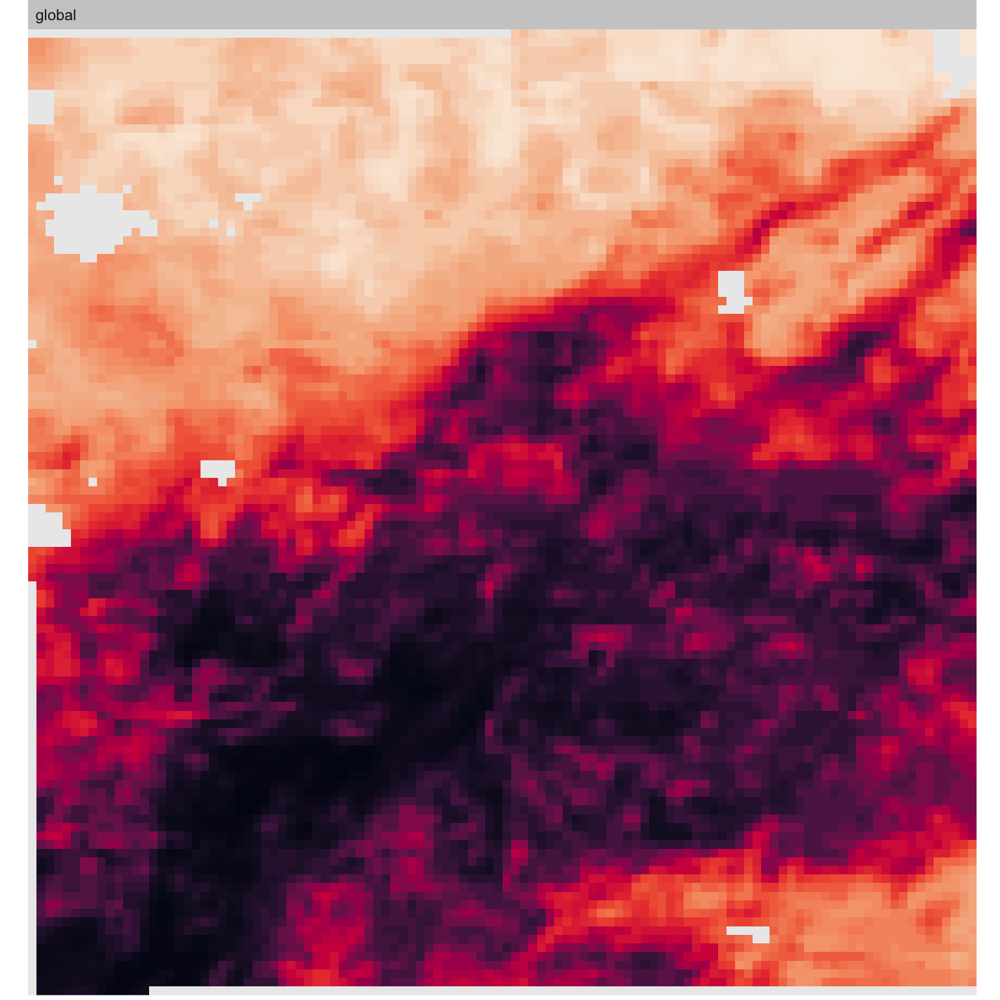
show_patches(sg.silt.class, class = "global")$layer_1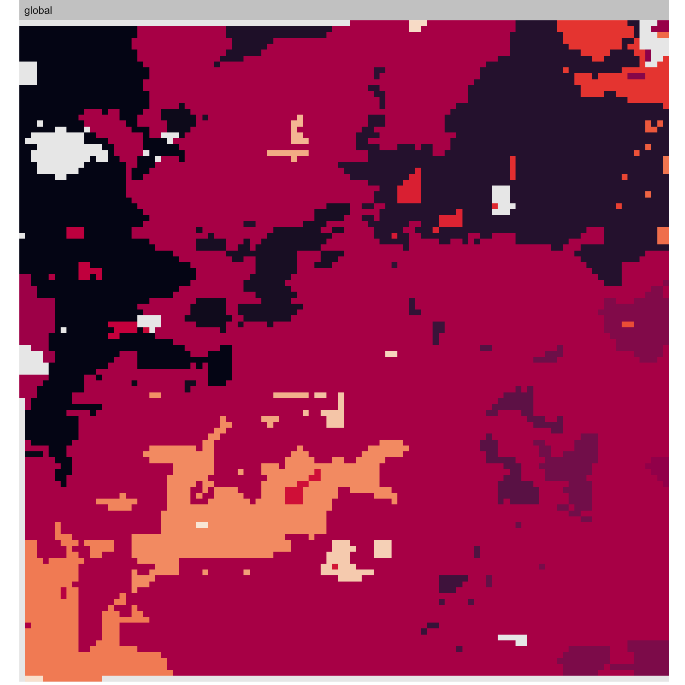
per-class:
show_patches(sg.ph.class, class = "all", nrow = 3)$layer_1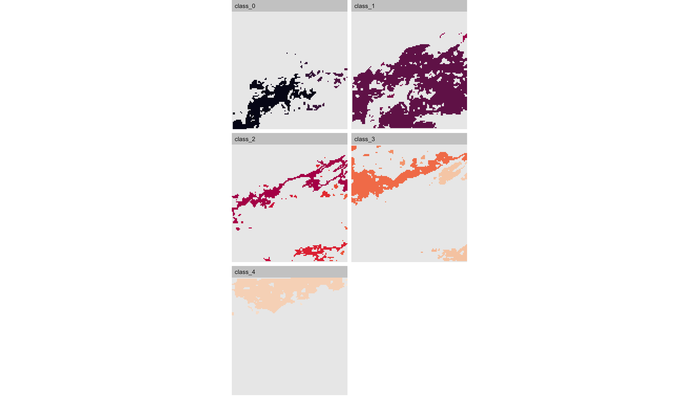
show_patches(sg.silt.class, class = "all", nrow = 3)$layer_1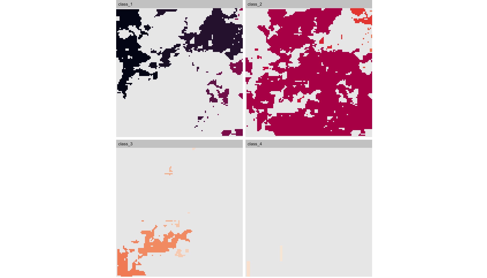
Q: Describe the main differences between the patterns. Which map seems more aggregated? More diverse?
Task: compute the metrics and tabulate them:
lst <- paste0("lsm_l_", c("shdi", "shei", "lsi", "ai", "frac_mn"))
ls.metrics.ph <- calculate_lsm(sg.ph.class, what=lst)
ls.metrics.silt <- calculate_lsm(sg.silt.class, what=lst)
metrics.table <- data.frame(product=c("pH", "silt"),
rbind(round(ls.metrics.ph$value, 3),
round(ls.metrics.silt$value, 3)))
names(metrics.table)[2:6] <- ls.metrics.ph$metric
metrics.tableQ: Referring to the descriptions of these metrics (above), what are the differences between these maps’ landscape patterns? Where do the maps most differ?
- Aggregation Index
- Mean Fractal Dimension
- Landscape Shape Index
- Shannon Diversity
- Shannon Evenness
Question: Which maps in the DSM stack do you expect to have similar landscape metrics?
˙ # Supercells
“Superpixels” is a generic name for grouping pixels with similar characteristics into larger assemblages. In the soil map context, the aim is to regionalize into areas with similar values of one or more raster layers.
The supercells::supercells function controls the segmentation: the user can specify the k argument for the number of supercells, and the compactness argument to control shape: larger values lead to more square, less long/twisted shapes. It is also possible to specify a set of initial supercell centres (with an sf POINTS geometry) or a separation between initial centres with the step argument.
This function implements the SLIC algorithm (Achanta et al., 2012).
As an example with the pH map, we divide into about 50 supercells, with low compactness since we don’t expect near-square natural units. Here is the source map:
ggplot() +
geom_spatraster(data=sg4.utm[[ix.ph05]]) +
scale_fill_viridis_c() +
labs(fill = "pH x 10")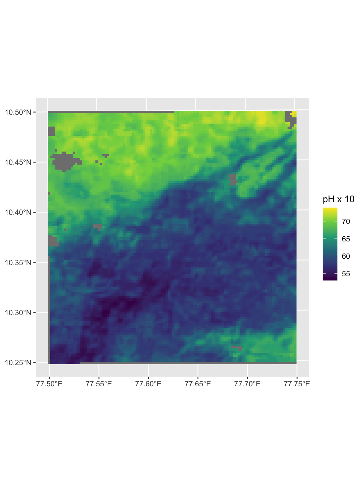
And here are the 50 supercells, with very low compactness, i.e., allowing for irregular and elongated shapes:
sg4.ph.50 = supercells(sg4.utm[[ix.ph05]], k = 50, compactness = 0.1)
names(sg4.ph.50)[1] "supercells" "x" "y" "phh2o_0.5cm_mean"
[5] "geometry" names(sg4.ph.50)[4] <- "pH_05cm" # `supercells` changes the name -- a bug?
ggplot(data=sg4.ph.50) +
geom_sf(aes(fill = pH_05cm)) +
scale_fill_viridis_c() +
labs(fill = "mean pH")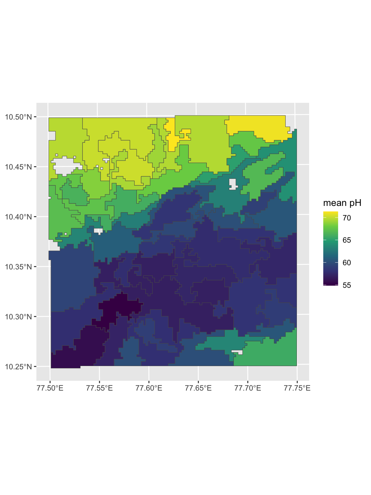
Try to form more compact supercells:
sg4.ph.50 = supercells(sg4.utm[[ix.ph05]], k = 50, compactness = 3)
names(sg4.ph.50)[4] <- "pH_05cm" # `supercells` changes the name -- a bug?
ggplot(data=sg4.ph.50) +
geom_sf(aes(fill = pH_05cm)) +
scale_fill_viridis_c() +
labs(fill = "mean pH")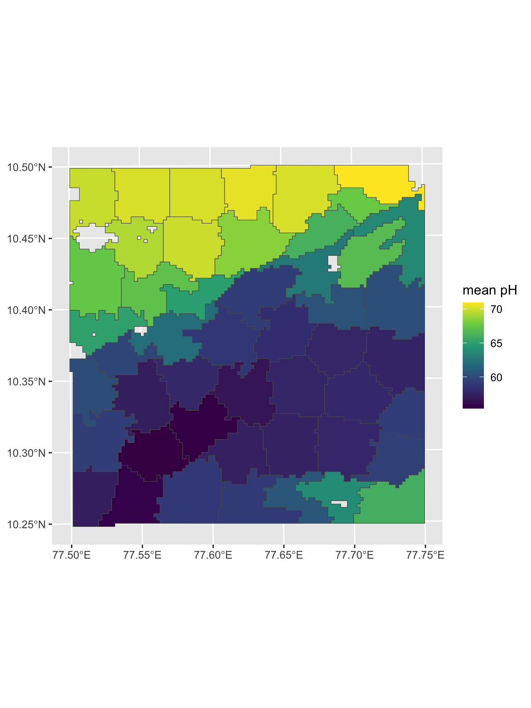
These do not look realistic.
Try with multiple rasters, here pH and silt concentrations:
r <- c(sg4.utm[[ix.ph05]], sg4.utm[[ix.silt05]])
r.50 = supercells(r, k = 50, compactness = 0.1)
ggplot(data=r.50) +
geom_sf(aes(fill = phh2o_0.5cm_mean)) +
labs(fill = "mean pH") +
scale_fill_continuous(type = "viridis")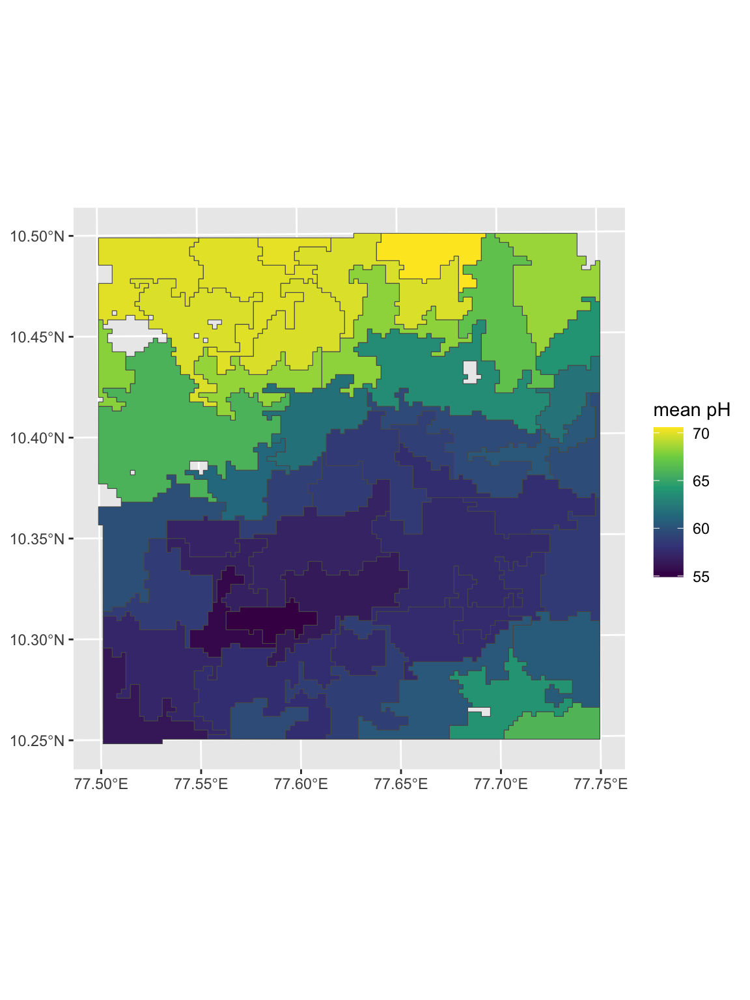
ggplot(data=r.50) +
geom_sf(aes(fill = silt_0.5cm_mean)) +
labs(fill = "silt ppt") +
scale_fill_continuous(type = "viridis")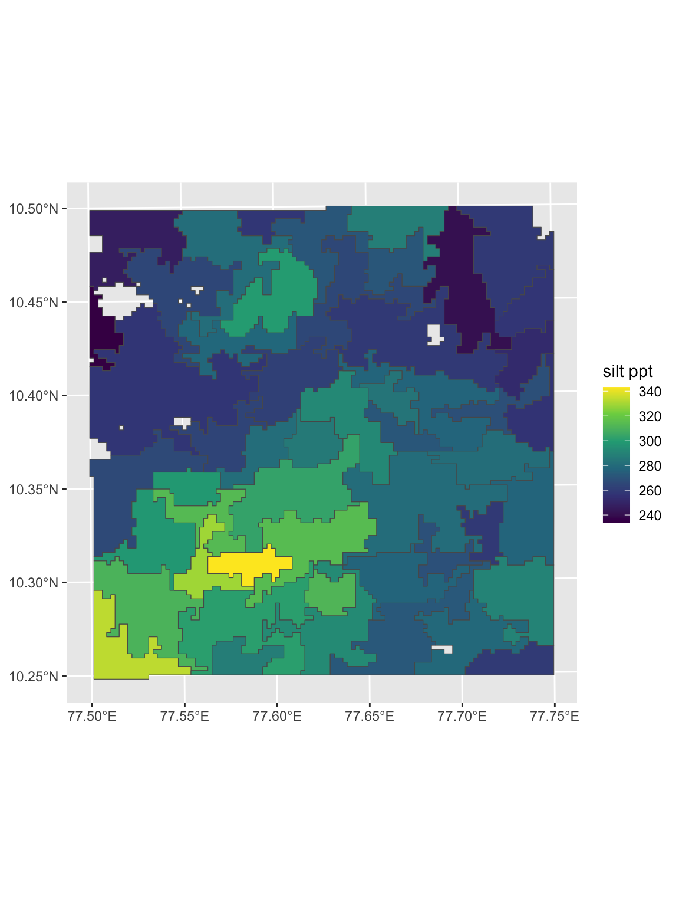
The segments are the same in the two visualizations.
Challenge: Experiment with different compactness and k parameters. Which seem to give a more “realistic” landscape pattern?
7 References
Achanta, R., Shaji, A., Smith, K., Lucchi, A., Fua, P., & Süsstrunk, S. (2012). SLIC Superpixels compared to state-of-the-art superpixel methods. IEEE Transactions on Pattern Analysis and Machine Intelligence, 34(11), 2274–2282. IEEE Transactions on Pattern Analysis and Machine Intelligence. https://doi.org/10.1109/TPAMI.2012.120
Boulaine, J. (1982). Remarques sur quelques notions élémentaires de la pédologie”. Cahiers O.R.S.T.O.M., Série Pédologie, 19(1), 29–41.
Brus, D. J., Kempen, B., & Heuvelink, G. B. M. (2011). Sampling for validation of digital soil maps. European Journal of Soil Science, 62, 394–407. https://doi.org/10.1111/j.1365-2389.2011.01364.x
Fridland, V. M. (1974). Structure of the soil mantle. Geoderma, 12, 35–42. https://doi.org/10.1016/0016-7061(74)90036-6
Hall-Beyer, M. (2017a). GLCM Texture: A Tutorial v. 3.0 March 2017. http://hdl.handle.net/1880/51900
Hall-Beyer, M. (2017b). Practical guidelines for choosing GLCM textures to use in landscape classification tasks over a range of moderate spatial scales. International Journal of Remote Sensing, 38(5), 1312–1338. https://doi.org/10.1080/01431161.2016.1278314
Haralick, R. M., Shanmugam, K., & Dinstein, I. (1973). Textural features for image classification. IEEE Transactions on Systems, Man, and Cybernetics, SMC-3(6), 610–621. IEEE Transactions on Systems, Man, and Cybernetics. https://doi.org/10.1109/TSMC.1973.4309314
Hesselbarth, M. H. K. (2021). R-Spatialecology/Landscapemetrics. r-spatialecology. https://github.com/r-spatialecology/landscapemetrics
Hesselbarth, M. H. K., Sciaini, M., With, K. A., Wiegand, K., & Nowosad, J. (2019). Landscapemetrics: An open-source R tool to calculate landscape metrics. Ecography, 42, 1648–1657. https://doi.org/10.1111/ecog.04617
Johnson, W. M. (1963). The Pedon and the Polypedon. Soil Science Society of America Journal, 27(2), 212–215. https://doi.org/10.2136/sssaj1963.03615995002700020034x
Kupfer, J. A. (2012). Landscape ecology and biogeography: Rethinking landscape metrics in a post-FRAGSTATS landscape. Progress in Physical Geography-Earth and Environment, 36(3), 400–420. https://doi.org/10.1177/0309133312439594
Mahoney, M. J., Johnson, L. K., Silge, J., Frick, H., Kuhn, M., & Beier, C. M. (2023). Assessing the performance of spatial cross-validation approaches for models of spatially structured data (arXiv:2303.07334). arXiv. https://doi.org/10.48550/arXiv.2303.07334
McGarigal, K., Cushman, S. A., & Ene, E. (2012). FRAGSTATS v4: Spatial pattern analysis program for categorical and continuous maps. University of Massachusetts. http://www.umass.edu/landeco/research/fragstats/fragstats.html
Minasny, B., McBratney, A. B., & Whelan, B. M. (2005). VESPER: Variogram Estimation and Spatial Prediction plus ERror - Australian Centre for Precision Agriculture. https://precision-agriculture.sydney.edu.au/resources/software/download-vesper/.
Nowosad, J., & Stepinski, T. F. (2018). Spatial association between regionalizations using the information-theoretical V-measure. International Journal of Geographical Information Science, 32(12), 2386–2401. https://doi.org/10.1080/13658816.2018.1511794
Open Geospatial Consortium. (2023). OGC GeoTIFF Standard. In OGC GeoTIFF Standard. https://www.ogc.org/standard/geotiff/.
Piikki, K., Wetterlind, J., Söderström, M., & Stenberg, B. (2021). Perspectives on validation in digital soil mapping of continuous attributes a review. Soil Use and Management, 37(1), 7–21. https://doi.org/10.1111/sum.12694
Poggio, L., de Sousa, L. M., Batjes, N. H., Heuvelink, G. B. M., Kempen, B., Ribeiro, E., & Rossiter, D. (2021). SoilGrids 2.0: Producing soil information for the globe with quantified spatial uncertainty. SOIL, 7(1), 217–240. https://doi.org/10.5194/soil-7-217-2021
Uuemaa, E., Mander, U., & Marja, R. (2013). Trends in the use of landscape spatial metrics as landscape indicators: A review. Ecological Indicators, 28, 100–106. https://doi.org/10.1016/j.ecolind.2012.07.018
Footnotes
https://r-spatialecology.github.io/landscapemetrics/↩︎
Reuse
CC-BY